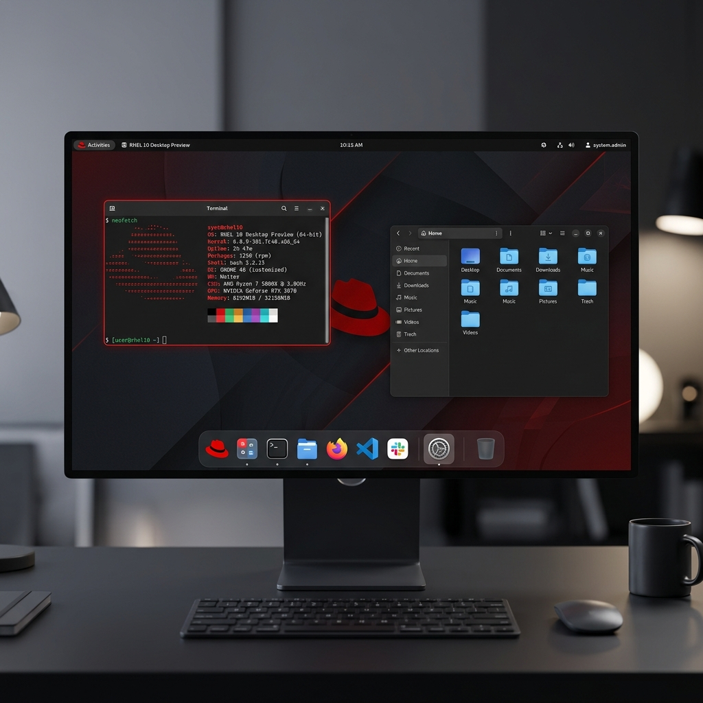

Operating Systems Overview
Understanding the foundation of systems architecture
An Operating System (OS) is system software that manages computer hardware and software resources, providing common services for computer programs. Examples of modern OS variants include Windows, Linux, and macOS.
An operating system is a program that acts as an interface between the user and the computer hardware. It controls the execution of all kinds of programs, handling processor management, memory management, file handling, and hardware device controls.
Understanding Types of OS
Before launching services or configuring servers, it is critical to understand the division of operating systems. Modern systems are broadly split into two key categories:
- Client Operating Systems: Tailored for personal workstations and day-to-day desktop usage.
- Server Operating Systems: Specialized architectures designed to power enterprise datacenters and host files, databases, or web applications.
In the next chapter, we will look at a detailed comparison between these two systems.
Client vs Server Operating Systems
Analyzing features, duties, and security boundaries
Operating systems are optimized for the environments they serve. Workstations require responsive desktop interfaces, whereas servers prioritize uptime, networking throughput, and security.
Desktop Workstation OS
A Client Operating System operates within user laptops and desktops. It is designed to obtain services from a server and run end-user applications like web browsers, document editors, and games.
- Interface: Heavily visual with a GUI (Graphical User Interface) customized for consumer simplicity.
- Security: Configured for local users; relies on standard user/password permissions.
- Examples: Windows 10/11, macOS, Android.
Datacenter Infrastructure OS
A Server Operating System is specifically engineered to run on physical or cloud servers. It is optimized to provide services to multiple clients simultaneously, handle high network traffic, and maintain 99.999% uptime.
- Interface: Often command-line based (CLI) without a heavy GUI to conserve processor resources.
- Security: Advanced firewall configurations, role-based controls, and rigid network access policies.
- Examples: Red Hat Enterprise Linux (RHEL), Windows Server 2016/2019/2022, Ubuntu Server.
| Feature | Server OS | Client OS |
|---|---|---|
| Run Environment | Runs on servers, cloud nodes, and datacenters. | Runs on workstations, laptops, and mobile devices. |
| Client Duties | Provides services to multiple clients at a time. | Obtains services from servers. |
| Complexity | Complex configuration, CLI-driven, multi-service. | Simple to operate, heavy reliance on graphical UI. |
| Security Profile | Provides advanced security, logging, and firewalls. | Standard user level security for desktop protection. |
| Popular Examples | RHEL, Windows Server, Rocky Linux, Debian. | Windows 7/8/10/11, Android, iOS. |
What is Open Source & Advantages
The power of collaborative development and the Linux kernel
Open Source refers to any software or program whose original source code is made freely available to use as a user and develop as a developer. This software is usually developed in a public collaboration environment, encouraging community audits and feature extensions.
Examples: Firefox, VLC Player, LibreOffice, Python, and the Linux Operating System.
12 Key Advantages of Linux
Linux is the operating system of choice for cloud engineers, system administrators, and security professionals. Let's look at its major advantages:
Open Source
Original source code is freely available to inspect, modify, and improve by anyone.
Free of Cost
No licensing fees to pay. Anyone can download and run it without purchasing keys.
High Security
Designed with rigid user privileges, rendering it highly resistant to malware.
Runs Fast in Old Hardware
Extremely lightweight footprint can revive older computer workstations.
Network Friendliness
Outstanding built-in networking tools and protocols for high throughput.
Choice
Choose from multiple distributions, desktops, and custom system programs.
Stable Performance
Runs for years without crashes, performance degradation, or reboots.
Multitasking
Excellent processor scheduling capable of running many actions concurrently.
Customizable
Alter any aspect of the kernel, system scripts, or terminal environment.
Easy & Fast Installation
Modern Linux installers allow full configuration in a few clicks.
Full Use of HDD
Advanced filesystems maximize storage density and read/write speeds.
Lightweight
Minimal disk space and RAM usage relative to alternative modern operating systems.
Linux Founder: Linus Torvalds
The visionary software engineer behind the kernel
Linus Benedict Torvalds
Linus Benedict Torvalds is a Finnish software engineer best known for having initiated the development of the Linux kernel and the Git revision control system. His efforts in open collaborative coding redefined modern software development structures.
A Student's Hobby
In 1991, while Torvalds was a student at the University of Helsinki, Finland, he began building a simple terminal interface operating system kernel. Dissatisfied with MINIX (a minimal Unix-like operating system for academic purposes), he sought to create a free terminal alternative capable of full multitasking.
His early email to the MINIX newsgroup became one of the most famous posts in tech history, marking the spark of the collaborative open-source revolution.
History of Linux
From a student project to powering the global infrastructure
Today, Linux is the leading operating system powering cloud infrastructure, supercomputers, mobile devices (via Android), and embedded hardware worldwide.
Release of Linux 0.01
Linus Torvalds uploaded the first code of Linux (v0.01) to an FTP server hosted by Helsinki University. He shared the code online, asking for suggestions on the Minix newsgroup.
First "Official" Version: Linux 0.02
Encouraged by early feedback, Torvalds developed new features and released the first official version, version 0.02. This release allowed users to run the Bash shell and compile programs using GCC.
The Supercomputing Giant
Over the decades, Linux became the dominant server operating system. Today, 90% of the top 500 fastest supercomputers in the world run on a Linux variant, including the top 10.
UNIX Roots
The legendary predecessor that defined operating system standards
To fully understand Linux, we must look back at its ancestor: UNIX. Linux is a "Unix-like" operating system, meaning it shares design principles, folder structures, and terminal behaviors with UNIX.
UNIX is a family of multitasking, multiuser operating systems developed in 1969 at the Bell Labs research center by Ken Thompson, Dennis Ritchie, and other computer pioneers. They designed it to be highly modular, treating files, directories, and hardware devices uniformly.
Key UNIX Concepts Inherited by Linux:
- Everything is a File: Hardware components, disks, network interfaces, and folders are represented as files in the file system.
- Small, Specialized Tools: The system provides minor CLI tools that do one job well and can be connected using pipes (e.g., `grep`, `awk`, `sed`).
- Multiuser Separation: Secure permission levels that prevent normal users from modifying system files (managed by the `root` account).
What is Red Hat?
Pioneering the commercial open-source model
Red Hat, Inc. is an American multinational software company that specializes in providing open-source software products to the enterprise community. It proved that open-source software could be successfully supported, commercialized, and backed at an enterprise level.
Red Hat Corporate Profile
Founded in 1993, Red Hat began when Marc Ewing and Bob Young merged their software operations. They wanted to package Linux distributions with support contracts, custom updates, and QA testing for corporate clients.
Red Hat Leadership
Red Hat has grown to be a massive subsidiary of IBM (acquired in 2019), keeping its focus on Linux development. The current CEO is Matt Hicks, who has led the company since July 2022.
Red Hat Enterprise Linux (RHEL)
The trusted datacenter server platform
Red Hat Enterprise Linux (RHEL) is a enterprise-oriented Linux distribution developed by Red Hat. It is specifically targeted toward the commercial enterprise market, providing a stable, secure, and certified platform for heavy datacenter workloads.
RHEL Version Timeline
Early Commercial Steps (2002-2003)
Established the enterprise-grade subscription model for servers.
Virtualization & SELinux (2005-2007)
Introduced advanced security policies (SELinux) and Xen virtualization.
Systemd & Containers (2010-2014)
Switched to Systemd, added native support for Linux containers (Docker) and XFS filesystem.
Modern Cloud Platforms (2019-2022)
Optimized for hybrid clouds, Python 3 integration, and high security configurations.
Next-Gen Infrastructure (Preview Edition)
Features latest cloud packages, next-gen hardware support, and advanced AI container optimization.
RHEL 10 Desktop Preview
Below is a preview mockup showing the clean user interface layout of Red Hat Enterprise Linux 10 running on a developer workstation. It showcases Gnome desktop environment tweaks and dark integration:

Why Become RHCSA Certified?
Accelerating your IT infrastructure career path
The Red Hat Certified System Administrator (RHCSA) is one of the most respected performance-based certifications in the IT world. Unlike multiple-choice exams, the RHCSA requires candidates to perform actual system administration tasks on a live Red Hat Enterprise Linux system.
Highly Demanding Course
Enterprise datacenters require skilled Linux admins. RHCSA is a global gold standard.
Proof of Knowledge
Proves to employers you can actually format disks, manage users, and handle networks in a live shell.
Boost Administration Skills
Deepens your commands knowledge, system security protocols, and scripting skills.
Grab Good Opportunities
Opens immediate vacancies in cloud operations, DevOps, and Unix sysadmin roles.
Ready to try running some commands yourself? Click Next to use our interactive terminal playground!
Red Hat Enterprise Linux 10: RHCSA & RHCE Official Certification Roadmap
Complete course paths (RH124, RH134, RH294) and hands-on competencies
The Red Hat certification program is performance-based, testing real-world command line execution on live Linux instances. Below is the complete official course track and interactive competency checklist for RHCSA and RHCE certifications on Red Hat Enterprise Linux 10.
RHCSA Track (EX200 Exam)
System AdministratorFocuses on core Linux administration tasks including storage setup, user management, security controls, system service configuration, and troubleshooting.
Focuses on fundamental CLI skills, file navigation, permissions, software packages, networking, and basic process management.
Focuses on LVM storage, swap, SELinux enforcement, firewalls, boot process, shell scripts, containers, and system log analysis.
RHCE Track (EX294 Exam)
Certified EngineerFocuses on enterprise IT automation with Red Hat Ansible Automation Platform to configure managed nodes, deploy services, and manage infrastructure.
Focuses on Ansible Core engine, YAML playbooks, inventory management, variables, facts, roles, handlers, Ansible Vault, and troubleshooting.
Interactive Certification Objective Progress Tracker
0 / 40 Objectives CompletedRHCSA Objectives & Competencies (EX200 - RHEL 10)
RHCE Ansible Automation Objectives (EX294 - RH294)
Linux Lab Setup Guide
Download and configure your local virtualized Linux laboratory
To prepare for system administration duties, you need a local sandbox environment. By using a Virtual Machine (VM), you can safely install and configure Red Hat Enterprise Linux inside your existing Windows system without modifying your computer's main partitions.
Step 1: Install a Virtual Machine Monitor
A hypervisor allows you to provision guest machines on your PC. We will use Oracle VM VirtualBox, which is free, open-source, and highly stable.
Download the installer directly from the official repository:
Step 2: Obtain the Red Hat Enterprise Linux Installer ISO
To run RHEL 10, you must register a Red Hat account (which grants you a free developer subscription) and download the operating system disk image (ISO).
- Register a Red Hat account: Use the registration link below to create your developer login:
- Download the RHEL 10 ISO: Download the x86_64 DVD ISO installer file using the product link below:
If you prefer a combined bundle or encounter speed limits, you can download both VirtualBox and RHEL ISO installer files directly from our shared Google Drive mirror:
Troubleshooting VM & BIOS Issues
Resolving processor virtualization, core limits, and kernel panic faults
During local setups, you might encounter virtual machine launch failures or processor-level boot errors. Below are the two most common errors and how to resolve them.
Issue 1: Virtualization Technology Disabled
VirtualBox cannot execute 64-bit systems if your motherboard's CPU virtualization feature is disabled in your computer's BIOS settings.
Press Ctrl + Shift + Esc (or Ctrl + Alt + Delete) to open Task Manager. Go to the Performance tab, click CPU, and look for Virtualization:. If it displays Disabled, you must enable it in BIOS.
Enabling Virtualization in BIOS (Example Guide)
Different motherboard brands have different keys to access the BIOS. Follow these standard guidelines:
- HP Laptops: Shutdown -> Turn power on -> Immediately tap the Esc key 5-6 times -> Press F10 to enter BIOS setup -> Navigate to Configuration or Security -> Enable Virtualization Technology -> Press F10 to Save and Exit.
- Other Manufacturers: Keep pressing the bios entry key (typically F2, F12, or Del) during startup. Look for terms like Intel Virtualization Technology, Intel VT-x, AMD-V, or SVM Mode and toggle them to **Enabled**.
Pro Tip: Go to YouTube and search for your laptop model (e.g., "open bios settings in Acer Aspire 5") for a visual walkthrough.
Issue 2: Kernel Panic / CPU Panic Boot Failure
If you see a black/purple crash screen stating Kernel panic - not syncing or CPU panic during RHEL startup, apply these two adjustments:
Solution A: CPU Core Configuration
By default, VirtualBox may assign only 1 CPU core. Modern Linux kernels require more cores. Power off the VM -> Click Settings -> System -> Processor -> Set cores count to 2 Cores -> Click OK and restart.
Solution B: Disable Core Isolation Conflicts
Windows Core Isolation (Memory Integrity) can conflict with virtual machine hypervisors. Open Windows Start menu -> Search for Core Isolation -> Switch Memory Integrity to OFF -> Reboot your PC and retry booting your VM.
Linux Boot Process & Run Levels
Understanding system initialization, systemd target states, and emergency root password recovery
Booting a Linux system is the sequence of events that occurs from the moment physical power is applied to your computer until the operating system presents a fully operational user login prompt. During this initialization process, the system loads the kernel into physical RAM, initializes hardware drivers, and transitions into a designated system run level (systemd target).
Booting refers to powering on the computer and starting the operating system. The boot process loads the operating system kernel and core system services into main memory (Random Access Memory - RAM) installed on your system.
The 6 Stages of Linux Initialization
Modern RHEL systems transition through six distinct initialization phases during startup:
POST & BIOS / UEFI
Power-On Self-Test: The motherboard firmware performs hardware self-checks (RAM, CPU, storage drives). Once verified, it locates the bootloader on the primary boot device.
MBR / GPT Master Boot Record
The firmware reads the Master Boot Record (512 bytes on MBR drives) or the EFI System Partition (on GPT drives) to locate stage 1 of the bootloader.
GRUB2 Bootloader
Grand Unified Bootloader v2: Displays the boot menu, allows kernel parameter modifications (e.g., rd.break), and loads the selected kernel image (vmlinuz) into memory.
Linux Kernel (vmlinuz)
The compressed Linux kernel executes memory management, detects CPU architecture, mounts virtual filesystems (/proc, /sys), and initializes core drivers.
Initramfs (Initial RAM Filesystem)
A temporary root filesystem image loaded into RAM containing storage drivers (e.g., RAID, LVM, NVMe, XFS) required to mount the real root filesystem (/).
systemd Init System (PID 1)
systemd takes over as Process ID 1, reads target dependencies (e.g., multi-user.target or graphical.target), spawns background daemons, and presents the user login prompt.
What is a Run Level?
A run level is a state of a machine that defines how a machine should log in, what services and background scripts should run when a machine starts. In traditional SysVinit, numeric run levels 0–6 were used. Modern systemd-based Linux (like RHEL) maps these run levels directly to systemd target units.
Linux supports 7 operating states ranging from complete poweroff to full graphical user interface desktop environments.
Shuts down all system services, unmounts filesystems, and completely powers off the computer hardware.
Minimal environment for system maintenance and troubleshooting. Requires root login, no network services.
Text User Interface (CLI) mode without networking capability activated. Used for restricted non-network maintenance.
Full multi-user text terminal (TUI/CLI) with full networking support. GUI is not present. Default for production enterprise servers.
Not currently in active standard use. Reserved for custom administrator-defined purposes.
Full Graphical User Interface (GUI - GNOME/KDE) with networking and display manager. Default for desktop installations.
Gracefully stops all running processes, unmounts all mounted storage volumes, and restarts the computer.
Run Level Management & Systemd Commands
Sysadmin tasks frequently require switching run levels, inspecting default targets, or altering boot defaults. Below are the key commands used on modern systemd Linux machines:
| Action | Legacy SysV Command | Modern systemd Command | Target Unit |
|---|---|---|---|
| Reboot Computer | # init 6 |
# systemctl reboot |
reboot.target |
| Poweroff / Shutdown | # init 0 |
# systemctl poweroff |
poweroff.target |
| Check Default Run Level | # runlevel |
# systemctl get-default |
Shows current target |
| Set Default to TUI (Level 3) | # telinit 3 |
# systemctl set-default multi-user.targetor # systemctl set-default runlevel3.target |
multi-user.target |
| Set Default to GUI (Level 5) | # telinit 5 |
# systemctl set-default graphical.targetor # systemctl set-default runlevel5.target |
graphical.target |
Simulate target state management right in your browser. Click the buttons below to switch default boot run levels or inspect target symlinks:
[OK] Current Default Target: graphical.target (Runlevel 5)
Symlink: /etc/systemd/system/default.target -> /usr/lib/systemd/system/graphical.target
Steps for Resetting Root User Password
If you forget the system root password or lose administrative access, RHEL allows administrators to regain access using the rd.break emergency parameter during boot.
Resetting the root password is a mandatory core competency evaluated on the RHCSA Exam. Follow the exact 9-step procedure below to safely break into the initramfs emergency shell and relabel SELinux contexts.
Interactive Root Password Reset Walkthrough
Click on each step tab below to view instructions and execute simulated commands:
Step 1: Reboot / Restart Computer
Initiate a reboot of the machine either through the GUI menu or by executing init 6 from the shell terminal.
# init 6
Step 2: Access GRUB2 Boot Menu
During early boot, when the GRUB loader line appears, quickly press the Esc key 5 to 6 times (or any arrow key) to interrupt automatic booting and hold the GRUB selection menu active.
Step 3: Edit Rescue / Kernel Boot Parameters
Highlight the rescue or main kernel boot entry (2nd line or primary kernel) and press the e key to enter parameter edit mode.
Step 4: Append rd.break Parameter
Navigate to the very end of the line starting with linux ($root)... (or linux16 / linuxenv). Add one space at the end of the line and type rd.break. Then press Ctrl + x to boot with this temporary modification.
... quiet crashkernel=auto rd.break
Note: rd.break interrupts the boot process in the initramfs before handing over control to the real root filesystem.
Step 5: Remount /sysroot and Change Root Context
At the switch_root:/# emergency shell prompt, the real filesystem is mounted at /sysroot in read-only mode. Remount it in read-write mode and chroot into it:
# mount -o remount,rw /sysroot # chroot /sysroot
Step 6: Set New Root User Password
Set a new password for the root administrative user by executing passwd root:
# passwd root New password: 1 Retype new password: 1 passwd: all authentication tokens updated successfully.
Step 7: Relabel SELinux Security Contexts
Because modification occurred outside standard SELinux policies, you MUST instruct SELinux to perform a full system relabel on the next boot by creating the hidden /.autorelabel trigger file in root:
# touch /.autorelabel
CRITICAL: Omitting touch /.autorelabel will prevent SELinux from accepting the updated password shadow contexts, causing login failures!
Step 8: Exit Chroot and Emergency Shell
Type the exit command twice. The first exit leaves the /sysroot chroot jail; the second exit leaves the initramfs emergency shell and resumes system boot.
# exit # exit
Step 9: System Reboot & Login
Wait for the system to complete the automatic SELinux filesystem relabeling process and present the standard login window. Login as user root using your newly established password!
Linux File System Hierarchy
Understanding the unified single-rooted inverted tree directory structure
In Linux, everything is represented as a file—including hardware devices, processes, programs, and directory structures. Instead of separate drive letters like C: or D: in Windows, Linux organizes all files under a single unified root directory, forming an inverted tree structure.
The base of the Linux directory system is the root. It is represented by a single forward slash (/). Every single directory, configuration, or physical device mount arises from this starting point.
Interactive File System Explorer
Click on any folder in the tree structure below to inspect its purpose, path, and RHEL standard contents:
Root Directory (/)
The starting point of the Linux filesystem hierarchy. All files and directories are subdirectories of root, even if they are physically stored on different disks or virtual drives.
Bash Shell & Basic Commands
The command line interface and execution tools of Linux
Bash (Bourne Again Shell) is the default command-line interpreter (shell) in RHEL. It reads typed user inputs, expands variables and expressions, and runs background binary programs or shell builtins. It is an upgraded version of the legacy UNIX shell.
1. Directory Navigation & Operations
| Command | Command Example | Output / Purpose |
|---|---|---|
| pwd | pwd |
Prints absolute present working directory (e.g. /home/karan). |
| ls | ls |
Lists file names and folders in the current directory. |
| ls -l | ls -l |
Long listing format showing permissions, links, owner, group, size, date. |
| ls -a | ls -a |
List all files, including hidden files (starting with a dot .). |
| ls -lh | ls -lh |
Shows file sizes in human-readable notation (e.g., K, M, G). |
| cd [dir] | cd Documents |
Changes active shell directory path to the target folder. |
| cd / cd ~ | cd ~ |
Switches active directory back to user's home directory. |
| cd .. | cd .. |
Moves up one level to the parent directory. |
| cd - | cd - |
Toggles back to the previous active working directory. |
| mkdir | mkdir Linux or mkdir d1 d2 |
Creates one or multiple empty directories (folders). |
2. File Management & Deletion
| Command | Command Example | Output / Purpose |
|---|---|---|
| touch | touch file.txt or touch f1 f2 |
Creates empty blank files or updates access timestamps. |
| rmdir | rmdir Linux |
Removes empty directories only. Fails on non-empty directories. |
| rm | rm file.txt |
Deletes files permanently (no recycle bin). |
| rm -r | rm -r Folder |
Recursively deletes a folder and all its contents. |
| rm -rf | rm -rf Folder |
Forcefully and recursively deletes files/folders, ignoring warnings. |
| cp | cp f1.txt f2.txt |
Copies files from source to destination. |
| cp -r | cp -r Folder1 Folder2 |
Recursively copies folders and nested items. |
| mv | mv old.txt new.txt |
Renames files or folders if in the same path. |
| mv (move) | mv file.txt /home/user/Documents |
Moves files or folders (Cut & Paste) to a new destination. |
3. Reading & Viewing Files
| Command | Command Example | Output / Purpose |
|---|---|---|
| cat | cat file.txt |
Prints the entire content of a text file to the stdout. |
| less / more | less file.txt |
Opens a text file in scrollable pager view (use spacebar/arrows, Q to quit). |
| head | head file.txt |
Prints the first 10 lines of the file. |
| head -n | head -5 file.txt |
Prints the first N lines (e.g. 5 lines) of the file. |
| tail | tail file.txt |
Prints the last 10 lines of the file. |
| tail -f | tail -f logfile |
Monitors and prints additions in real-time (live log tracking). |
4. Shell Operators: Wildcards, Redirection, & Pipes
Linux shells utilize operators to filter inputs, redirect outputs, and chain commands:
| Operator Type | Syntax Example | Description |
|---|---|---|
| Wildcard (*) | ls *.txt or rm a* |
Matches zero or more characters (e.g., all files ending in .txt). |
| Wildcard (?) | ls file? |
Matches exactly one single character. |
| Save Redirection (>) | ls > files.txt |
Saves command output to a file, overwriting existing file content. |
| Append Redirection (>>) | ls >> files.txt |
Appends command output to the bottom of a file. |
| Read Redirection (<) | cat < file.txt |
Feeds the content of a file as input to a command. |
| Pipes (|) | history | grep ssh |
Sends the output of the first command as input to the next command. |
| Substitution $() | echo $(date) |
Executes the command inside parenthesis and inserts its output inline. |
5. System Info, Environment Variables, & History
| Action / Command | Command Example | Description / Output |
|---|---|---|
| whoami | whoami |
Prints active logged-in user account name (e.g. student). |
| date / cal | date or cal |
Prints system date/time or calendar grid for the current month. |
| which | which python |
Finds the filesystem path of the executable command. |
| man / --help | man ls or ls --help |
Displays user manual instructions or options helper for a command. |
| echo | echo Hello Linux |
Prints text strings directly to the shell terminal. |
| env | env |
Lists all active system environment variables. |
| $USER / $HOME | echo $USER or echo $HOME |
Standard variables for user account name and home directory path. |
| $PATH | echo $PATH |
Lists search paths where shell looks for command binaries. |
| history | history |
Displays numbered command history log. |
| History Run (!) | !25 |
Runs the exact command matching number 25 from history list. |
| clear | clear |
Clears terminal console viewport screen (Shortcut: Ctrl + L). |
6. Interactive Bash Keyboard Shortcuts
| Keyboard Shortcut | System Function |
|---|---|
| Ctrl + C | Stop / terminate the currently running command process immediately. |
| Ctrl + Z | Suspend / pause the active command (send to background task). |
| Ctrl + D | Logout of switched sessions or signal End-Of-File (EOF) input. |
| Ctrl + L | Clear terminal viewport screen (equivalent to typing clear). |
| Tab | Auto-complete the command name or path file name. |
| ↑ / ↓ | Browse through previous command history log records. |
| Ctrl + R | Search backward through command history log interactively. |
Managing Files & Directories
Master file creation, directory organization, deletion, copying, and renaming commands
Administering a Linux server consists heavily of managing data. In RHEL, folders are referred to as directories, and everything from program settings to hardware drives is a file. Below are the six fundamental operations for managing files and folders.
The mkdir command creates new directories (folders) in your filesystem.
| Scenario / Option | Command Example | Explanation |
|---|---|---|
| Create single directory | mkdir /india |
Creates an empty directory named india under root. |
| Create multiple directories | mkdir /city1 /city2 /city3 |
Creates multiple folders in a single execution line. |
| Create numbered directories | mkdir /city{4..9} |
Uses brace expansion to quickly create city4 through city9. |
| Create nested paths (-p) | mkdir -p /usa/Washington/whitehouse |
Creates parent directories if they do not exist, preventing error. |
The touch command creates empty files. Note that it is only designed for quick creation or updating timestamps; you cannot read, write, or append text using it.
| Scenario / Option | Command Example | Explanation |
|---|---|---|
| Create single file | touch /note.txt |
Creates a blank file named note.txt. |
| Create multiple files | touch /note1.txt /note2.txt |
Creates multiple files sequentially. |
| Range brace expansion (numbers) | touch /note{4..9}.txt |
Generates files note4.txt through note9.txt. |
| Range brace expansion (letters) | touch /note{a..z}.txt |
Generates 26 files from notea.txt to notez.txt. |
The rm command deletes files and folders. Warning: Deleting files in Linux CLI is permanent and cannot be undone from a trash bin!
| Scenario / Option | Command Example | Explanation |
|---|---|---|
| Remove a directory recursive | rm -rvf /india |
Recursively, forcefully, and verbosely deletes the /india folder. |
| Remove a single file | rm -rvf /note.txt |
Deletes /note.txt displaying a confirmation trace. |
| Remove multiple files | rm -rvf /note1.txt /note2.txt |
Deletes both files in one line. |
| Remove file wildcard prefix | rm -rvf /note* |
Uses the asterisk wildcard (*) to delete all files starting with "note". |
The cat (concatenate) command reads file contents, writes new files, and appends text. Redirection operators define its behavior.
| Operator | Command Example | Description |
|---|---|---|
| Read file (Default / <) | cat /info.txt or cat < /info.txt |
Prints the entire content of info.txt to the viewport. |
Create & Write file (>) |
cat > /info.txt |
Opens a text stream. Type text, then press Ctrl + D on a new line to save and exit. Overwrites existing file contents! |
Append content (>>) |
cat >> /info.txt |
Appends new lines of text to the bottom of the file without deleting existing text. Press Ctrl + D to save. |
The cp command copies a file or directory source to a target destination.
| Scenario | Command Example | Explanation |
|---|---|---|
| Copy file to folder | cp -rvf /root/anaconda-ks.cfg /africa/ |
Copies the anaconda-ks.cfg configuration into the /africa directory. |
| Copy directory recursive | cp -rvf /root/Music /africa/ |
Copies the entire Music directory (including all files inside) to /africa. |
| Copy prefix wildcards | cp -rvf /root/Do* /africa/ |
Copies all contents beginning with "Do" to /africa. |
| Copy ranges | cp -rvf /root/note{1..5}.txt /africa/ |
Copies files note1.txt through note5.txt. |
| Copy extension matches | cp -rvf /root/*.txt /africa/ |
Copies all text files (ending in .txt) to the destination. |
The mv command relocates files/folders (Cut & Paste) or renames them if the target path is in the same directory.
| Operation Type | Command Example | Explanation |
|---|---|---|
| Rename directory | mv /africa /asia |
Renames the folder /africa to /asia. |
| Rename file | mv /note.txt /imp.txt |
Renames the file note.txt to imp.txt. |
| Move file (Cut & Paste) | mv /imp.txt /asia/ |
Moves imp.txt into the /asia directory. |
| Move folder | mv /asia/ /root/ |
Relocates the entire /asia directory inside the superuser's /root. |
You can try all of these operations in the next chapter's terminal playground. Create directories, write files using cat redirects, move them around, and verify the changes in real-time by listing contents with ls!
Linux File Links: Soft Links & Hard Links
In Linux, a link is a pointer or reference mechanism that allows one file or directory to be accessed through multiple names or paths without creating duplicate copies of the underlying disk data.
1. What is a Link in Linux?
A link creates an alternate path entry in the directory structure pointing to existing data on disk. Links enable administrators to organize files efficiently, save disk space, provide backward-compatible paths, and streamline shortcut access.
- Provide Alternate Names: Assign multiple friendly shortcut names to the same target file.
- Save Disk Space: Avoid storing duplicate copies of heavy binaries or log files across directories.
- Create Shortcuts: Provide easy access to deeply nested configuration paths (e.g.
/etc/httpd/conf.d). - Simplify System Updates: Update shared library symlinks seamlessly without altering application reference code.
2. Soft Link (Symbolic) vs Hard Link Comparison
| Feature Property | Soft Link (Symbolic Link / Symlink) | Hard Link |
|---|---|---|
| Filesystem Scope | Can be created across different filesystems / partitions. | Can ONLY be created within the same filesystem. |
| Inode (ID Number) | Has a different/unique Inode ID number. | Has the exact same Inode ID number as target. |
| Target File Deletion | Data lost! Link becomes broken / dangling if original target is removed. | Data is preserved! Data remains accessible until link count drops to 0. |
| Target File Renaming | Renaming original target file breaks the soft link pointer. | Renaming original file has no impact on hard link access. |
| Directory Linking | Can link both files and directories. | Cannot link directories (prevents filesystem cycles). |
| Creation Syntax | ln -s /home/filea.txt /root/fileb.txt |
ln /home/file1.txt /root/file2.txt |
3. Creating & Inspecting Links
ln -s)
Create a symbolic link named fileb.txt pointing to target /home/filea.txt:
# ln -s /home/filea.txt /root/fileb.txt # Inspect file IDs and symlink pointer (different inode numbers): # ls -li /home/filea.txt /root/fileb.txt 1048577 -rw-r--r--. 1 root root 25 May 1 10:00 /home/filea.txt 2097153 lrwxrwxrwx. 1 root root 15 May 1 10:01 /root/fileb.txt -> /home/filea.txt
ln)
Create a hard link named file2.txt sharing the exact inode data of /home/file1.txt:
# ln /home/file1.txt /root/file2.txt # Inspect file IDs and hard link count (identical inode numbers and link count = 2): # ls -li /home/file1.txt /root/file2.txt 3145729 -rw-r--r--. 2 root root 40 May 1 10:05 /home/file1.txt 3145729 -rw-r--r--. 2 root root 40 May 1 10:05 /root/file2.txt
Interactive Soft Link vs Hard Link Simulator
Test creating symbolic links, hard links, inspecting inode numbers with ls -li, and deleting original files below:
Link Operations
Inode & Link Console Log
# Link Operations Subsystem Console
Select a link action on the left to simulate creating symbolic soft links and hard links in RHEL 10...
Text Editing with Vim
Learn to edit configuration files inside the terminal using Vim's modes and operations
In Red Hat Enterprise Linux, system administration revolves around editing text-based configuration files. vim (Vi Improved) is a terminal-based text editor standard on RHEL, extending the classic vi editor originally popular in Unix operating systems.
Vim does not work like a normal graphic editor (like Notepad or Word). To type or run commands, you must explicitly toggle between three modes:
| Working Mode | How to Access | Purpose & Operations |
|---|---|---|
| 1. Command Mode (Normal) | Default starting mode (or press Esc) |
Navigation, copy/paste lines, delete characters, undo/redo edits. Keys do not insert text. |
| 2. Insert Mode | Press i while in Command Mode |
Allows direct editing and insertion of text contents into the active document buffer. |
| 3. Extended Mode (Command-line) | Press : (colon) while in Command Mode |
Save (write), exit (quit), toggle configurations like margins or line numbering. |
Interactive Vim Mode Visualizer
Click the mode buttons below to see how Vim changes its display and inputs depending on the active state:
Command Mode Keyboard Shortcuts
Use these shortcuts when in **Command/Normal Mode** to perform fast inline edits:
| Shortcut | Action | Scope |
|---|---|---|
yy |
Copy (Yank) active line | Active row |
yw |
Copy (Yank) active word | Word under cursor |
nyy |
Copy n lines |
Multiple rows |
dd |
Delete (Cut) active line | Active row |
dw |
Delete (Cut) active word | Word under cursor |
ndd |
Delete n lines |
Multiple rows |
p |
Paste copied buffer | Pastes below active cursor line |
u |
Undo last operation | Supports up to 1000 history levels |
Ctrl + r |
Redo last undone operation | Reverses undo commands |
gg |
Jump to top line | Line 1 |
G |
Jump to bottom line | Last line of file |
ngg or nG |
Jump to specific line n |
Line n |
Extended Mode Command Line Operations
Enter extended mode by typing : (colon) to save files, quit the editor, or toggle configurations:
| Command | Action | Description |
|---|---|---|
:w |
Write (Save) | Saves active file contents to disk. |
:q |
Quit (Exit) | Closes Vim. Fails if there are unsaved edits. |
:wq |
Write & Quit | Saves changes and exits to shell. (Same as :x). |
:w! / :q! / :wq! |
Forceful operation | Ignores locks or warnings (e.g. quit without saving changes). |
:se nu |
Set line numbers | Displays serial numbers along left editor gutter margin. |
:se nonu |
Remove line numbers | Hides margin numbers for clean viewing. |
You can try all of these operations in the next chapter's terminal playground. Create and edit files using vim, save and quit, and verify the changes in real-time using ls and cat!
User Account Management
Create, configure, modify, and delete computer login accounts and security databases
A user account represents a distinct computer login identity. Operating systems like RHEL 10 utilize user accounts to enforce access boundaries, manage file ownership, and allocate hardware/software resources.
Linux organizes accounts into two categories based on their purpose and User Identifier (UID) ranges:
| Account Type | UID Range | Creation Method | Examples |
|---|---|---|---|
| System User | 0 - 999 |
Created automatically when installing the OS or service applications (e.g. web servers). | root (UID 0), apache, bin |
| Normal User | 1000 - 60000 |
Provisioned and managed manually by system administrators (privileged users). | student, ajay, amir |
Core Account Databases
Every account property and password detail is stored in RHEL's flat-file databases under the /etc directory:
- User properties database (
/etc/passwd): Contains account names, UID/GID, descriptive comments, home directory paths, and default shells. Read-accessible by all users. - User password database (
/etc/shadow): Stores password hash properties, aging values, and expiration settings. Read-accessible exclusively by the superuser (root).
Interactive /etc/passwd Line Builder
Customize the account fields below to see how RHEL formats user metadata inside the /etc/passwd database:
sachin:x:1002:1002:Junior Admin:/home/sachin:/bin/bash
User Administration Workflow
Use these administrative commands (as root or via sudo) to manage user accounts:
| Step & Operation | Command Example | Result & Action Description |
|---|---|---|
| 1. Create User Account | useradd sachin |
Creates a new user record in `/etc/passwd` and builds home directory /home/sachin. |
| 2. Create/Change Password | passwd sachin |
Prompts to assign or update the secure password hash properties stored inside `/etc/shadow`. |
| 3. Check Account Properties | grep sachin /etc/passwd |
Filters the user properties database file to review UIDs, comments, and shell mappings. |
| 4. Check Password Details | grep sachin /etc/shadow |
Filters the password database to verify encryption indicators or password locks. |
| 5. Switch Active User | su sachin |
Switches current terminal session to user sachin (asks for password unless logged in as root). |
| 6. Exit Shell Session | exit (or Ctrl+D) |
Logs out of the active user session and returns to the previous parent user. |
| 7. Delete User (Delete home dir) | userdel -r sachin |
Deletes the account entry and deletes the /home/sachin folder recursively. |
| 8. Delete User (Keep home dir) | userdel sachin |
Deletes the account entry from databases but keeps the home folder files intact. |
Modifying Account Properties: usermod
Adjust specific fields of an existing user account using the usermod options:
| Property Modification | Option Flag | Command Example | Result Details |
|---|---|---|---|
| Change Login Name | -l new_name |
usermod -l ajay sachin |
Renames the login account from sachin to ajay. |
| Change User ID (UID) | -u new_uid |
usermod -u 2525 sachin |
Updates the numerical User ID (sets sachin's UID to 2525). |
| Change GECOS Comment | -c "description" |
usermod -c "junior admin" sachin |
Saves descriptive comments (e.g. employee roles or phone details). |
| Change Home Directory | -d path |
usermod -d /goa sachin |
Updates user's home location path. (Use with -m to move files). |
| Change Shell | -s shell_path |
usermod -s /sbin/nologin sachin |
Sets login shell. Setting to `/sbin/nologin` prevents interactive console logins. |
| Change Expiry Date | -e "YYYY-MM-DD" |
usermod -e "2025-08-30" sachin |
Configures an automatic expiration date on the account (in shadow database). |
| Lock User Password | -L |
usermod -L sachin |
Locks the account by prepending a ! to the password hash, preventing logins. |
| Unlock User Password | -U |
usermod -U sachin |
Removes the locking character, enabling password logins again. |
4. Troubleshooting Home Directory Moves & Hidden Files
When changing a user's home directory path to a custom location, users often encounter a broken or basic command line prompt (e.g. -bash-5.1$ instead of the styled prompt) or permission denied errors. Here is how to perform this migration and fix it:
Step-by-Step Home Directory Migration
1. Create User and Verify Account:
# useradd sara # grep sara /etc/passwd
2. Create the New Directory and Change Home Path:
# mkdir /goa # usermod -d /goa sara # grep sara /etc/passwd
3. Fix Permissions, Ownership, and Copy Profile Files:
If you log in as sara now, the shell configuration environment files will be missing. Copy them and correct directory ownership to fix the bash environment:
# chmod 700 /goa # chown sara:sara /goa # cp -rvf /home/sara/.bash* /goa
4. Test and Confirm Login Session:
# su - sara $ pwd
Managing Hidden Files and Directories
In Linux, any file or directory starting with a period (.) is hidden from standard directory listings. Use the following operations to manage them:
-
Create Hidden Files / Directories: Prefix the name with a dot.
# mkdir /home/sara/.test # touch /home/sara/.note.txt
-
Show Hidden Items: Standard
lswill hide dot files. Pass the-a(all) flag to show them.# ls /home/sara/ # Does not show .test or .note.txt # ls -a /home/sara/ # Shows all files including hidden ones
-
Unhide or Hide Items (Rename): Use
mvto add or remove the leading dot.$ mv /home/sara/.test /home/sara/test # Unhides the directory # ls /home/sara/ # Now 'test' is visible!
5. Administrative Sudo Privileges (sudo)
The sudo (superuser do or switch user do) utility enables authorized standard users to run administrative commands with elevated superuser privileges based on policies configured inside the /etc/sudoers database file.
Configuring Sudoers Policy (/etc/sudoers)
Always edit the sudo policy file safely using visudo or vim /etc/sudoers. The policy syntax follows the format: User_or_%Group Host=(RunAs_User) Commands
# vim /etc/sudoers ajay ALL=(ALL) ALL [ Add around line 100 ]
Verification: Switch to account su ajay then run sudo useradd user1.
wheel Group
# gpasswd -a ajay wheel
In RHEL, members of the wheel group are granted full sudo rights by default (%wheel ALL=(ALL) ALL).
# vim /etc/sudoers %avenger ALL=(ALL) ALL [ Add around line 110 ]
The % prefix denotes a group name. Any user added to the avenger group automatically inherits full sudo rights.
# vim /etc/sudoers ajay ALL=(ALL) NOPASSWD: ALL %avenger ALL=(ALL) NOPASSWD: ALL
Allows user ajay or members of group avenger to execute administrative commands without entering password prompts.
# vim /etc/sudoers kiran ALL=/usr/sbin/useradd
Restricts user kiran so they can ONLY run the useradd binary via sudo, denying access to all other administrative binaries.
Proceed to the next chapter's playground terminal! Escalate to root via sudo -i, create accounts with useradd, modify shells, and check real-time changes inside /etc/passwd!
Group Account Management & Permissions
Establish user collections, organize directory groups, and modify owner permissions
A group account is a logical collection of user accounts. Organizing users into groups allows system administrators to grant read, write, or execute permissions to files and directories for multiple users at once, avoiding the need to configure permissions on an individual basis.
Linux organizes group memberships into two types:
- Primary Group: Created and deleted automatically when a user account is created or deleted. Typically shares the same name and GID as the user account's UID. A user must belong to exactly one primary group.
- Secondary Group: Manually created by administrators to grant extra group permissions. A user can belong to multiple secondary groups.
Group Database Files
Group mappings and administration settings are stored under RHEL's /etc directory:
- Group properties database (
/etc/group): Stores the group name, password placeholder (x), GID, and a comma-separated list of secondary members. Readable by all. - Group shadow database (
/etc/gshadow): Stores secure group parameters including administrators list (who can add/remove members) and group access passwords. Readable only by root.
Interactive /etc/group Line Builder
Adjust fields below to see how RHEL formats group metadata inside the /etc/group database:
ibmgrp:x:5050:ajay,vijay,sujay
Group Administration Commands
Administer group mappings and user lists using these commands (run with root privileges):
| Operation Purpose | Command Example | Action Details |
|---|---|---|
| 1. Create Group | groupadd ibmgrp |
Allocates a new group account in database registries (defaults GID >= 1000). |
| 2. Check Group Properties | grep ibmgrp /etc/group |
Filters `/etc/group` file to view GID and list of secondary users in the group. |
| 3. Add User to Group | gpasswd -a ajay ibmgrp |
Adds user ajay to the group (appends name to the group user list column). |
| 4. Remove User from Group | gpasswd -d ajay ibmgrp |
Deletes user ajay from group member columns. |
| 5. Bulk Members Set | gpasswd -M ajay,vijay,sujay ibmgrp |
Overwrites the group user list, setting members strictly to `ajay`, `vijay`, and `sujay`. |
| 6. Assign Group Admin | gpasswd -A ajay ibmgrp |
Promotes ajay to Group Admin, letting them add/delete users without root access. |
| 7. Assign Multiple Admins | gpasswd -A ajay,suraj,kiran ibmgrp |
Promotes multiple users to admin roles. |
| 8. Clear Group Admins | gpasswd -A "" ibmgrp |
Removes all administrative settings for the group. |
| 9. Check Admin Properties | grep ibmgrp /etc/gshadow |
Filters shadow settings to verify assigned admins and secure password parameters. |
| 10. Modify Group ID | groupmod -g 5050 ibmgrp |
Updates group numerical Group ID (sets group GID to 5050). |
| 11. Delete Group | groupdel ibmgrp |
Removes the group record from group databases. |
Ownership Permissions Control
Modify file owners, group memberships, and view directory status flags using these commands:
| Ownership Action | Command Example | System Behavior Description |
|---|---|---|
| Show directory flags | ls -ld /chennai |
Lists detailed flags (-d prints directory itself, -l prints long list permissions/owners). |
| Change File/Dir Owner | chown mahendra /chennai |
Updates the owner metadata field of /chennai to user account mahendra. |
| Change File/Dir Group | chgrp cskgrp /chennai |
Updates group membership metadata field to group account cskgrp. |
| Change Owner & Group at Once | chown mahendra:cskgrp /chennai |
Simultaneously updates owner to mahendra and group to cskgrp in a single command. |
Escalate to root inside the Terminal Playground, run groupadd, set permissions on directories, and check long listing details with ls -l!
Basic File Permissions
Controlling user, group, and world-level read, write, and execute permissions
File Permissions are used to control access to files and directories in a Linux environment. Every file and directory on a Linux system is owned by a specific Owner (User) and associated with a specific Group.
Permissions are divided into three main levels of granularity:
- 1. Basic Permissions: Controlling read, write, and execute permissions for user, group, and others. (Extremely flexible to manage).
- 2. ACL Permissions: Access Control Lists for assigning permissions to specific individual users/groups.
- 3. Special Permissions: SUID, SGID, and Sticky Bit for advanced process and folder security.
Understanding Basic Permissions
In basic permissions, we set three access operations across three ownership boundaries:
| Class | Representation | Permissions Meaning |
|---|---|---|
| User (u) | Owner of the file or directory. | Read (r): Can view file contents or list directory files. Write (w): Can modify file contents or add/delete files inside a directory. Execute (x): Can run the file as a program/script, or enter (cd) a directory. |
| Group (g) | Users belonging to the group assigned to the file. | Shares access rules defined for group members. |
| Others (o) | All other users (world access). | Applies to any user who is neither the owner nor a group member. |
Managing Permissions with Symbolic values (chmod)
The chmod (Change Mode) command modifies access permissions. Symbolic mode uses character selectors to add (+), remove (-), or explicitly set (=) permissions:
| Goal Description | Command | Effect |
|---|---|---|
| Remove read and execute for other users | chmod o-rx /mumbai |
Removes Read and Execute permissions from Others. |
| Remove read and execute for group | chmod g-rx /mumbai |
Removes Read and Execute permissions from Group. |
| Remove all permissions for owner | chmod u-rwx /mumbai |
Removes Read, Write, and Execute from Owner. |
| Add full permissions to owner | chmod u+rwx /mumbai |
Assigns full Read, Write, and Execute to Owner. |
| Add read and execute to group | chmod g+rx /mumbai |
Assigns Read and Execute to Group. |
| Add read and execute to others | chmod o+rx /mumbai |
Assigns Read and Execute to Others. |
| Remove permissions for all categories at once | chmod u-rwx,g-rx,o-rx /mumbai |
Applies multiple modifications separated by commas. |
| Provide full permissions to all | chmod ugo+rwx /mumbai |
Applies rwx to User, Group, and Others. |
| Remove all permissions from all | chmod ugo-rwx /mumbai |
Removes all access permissions from all categories. |
| Set exact permissions for all (overwriting existing) | chmod ugo=rx /mumbai |
Overwrites permissions for everyone to exactly read & execute (r-x). |
Managing Permissions with Numeric (Octal) values
Numeric values represent permissions as sums of octal binary weights:
- Read (r):
4 - Write (w):
2 - Execute (x):
1 - No permission (-):
0
For example, running chmod 750 /mumbai translates to:
- User: 7 (4+2+1) →
rwx(Full permission) - Group: 5 (4+0+1) →
r-x(Read & Execute) - Others: 0 (0+0+0) →
---(No permission)
Interactive Octal Permission Builder
Toggle checkboxes below to dynamically compute the numeric (octal) and symbolic permission strings.
Owner (User)
Group
Others (World)
Switch to root in the terminal playground, type touch note.txt, and modify its access using chmod 700 note.txt. Verify the change by running ls -l note.txt!
ACL File Permissions
Access Control Lists for granular user and group level overrides
Access Control Lists (ACLs) provide a flexible permission mechanism for file systems. Standard basic permissions (ugo) allow specifying permissions for only one owner and one group. ACLs allow system administrators to grant specific permissions to any individual user or group without changing file ownership.
Consider a file owned by student with group student. If you need to allow user sara to read/write the file, and group indiagrp to read-only it, basic permissions cannot do this. ACLs solve this by attaching individual permission metadata entries directly to the file inode.
Checking ACL Permissions (getfacl)
The getfacl command reads and displays the access control list metadata for a file or folder:
# getfacl /mumbai
# file: mumbai/
# owner: root
# group: root
user::rwx
user:sara:r-x
group::r-x
mask::r-x
other::---Managing ACL Permissions (setfacl)
The setfacl command modifies ACL metadata. Key flags include:
-m(modify): Add or update specific user or group rules.-x(remove): Remove specific user or group rules from the ACL.-b(remove all): Remove all custom ACL overrides (clears the ACL).
| Goal Description | Symbolic Syntax | Octal Syntax |
|---|---|---|
| Set ACL for specific user | setfacl -m u:sara:rwx /mumbai |
setfacl -m u:sara:7 /mumbai |
| Modify/demote ACL for user | setfacl -m u:sara:r-x /mumbai |
setfacl -m u:sara:5 /mumbai |
| Set ACL for specific group | setfacl -m g:indiagrp:rwx /mumbai |
setfacl -m g:indiagrp:7 /mumbai |
| Remove specific user ACL | setfacl -x u:sara: /mumbai |
N/A (Specify empty permission) |
| Remove specific group ACL | setfacl -x g:indiagrp: /mumbai |
N/A (Specify empty permission) |
| Clear all custom ACLs | setfacl -b /mumbai |
Clears user/group overrides |
Interactive ACL Command & Output Visualizer
Add mock ACL rules to generate the matching setfacl commands and view the updated getfacl layout.
Define ACL Rule
getfacl /mumbai
# file: mumbai/ # owner: root # group: root user::rwx group::r-x other::---
Escalate to root in the terminal, run mkdir /mumbai, and practice granting access to user ajay using setfacl -m u:ajay:rwx /mumbai. Inspect with getfacl /mumbai!
Linux System Security
Special File Permissions, Security-Enhanced Linux (SELinux), and firewalld control
Modern Linux servers (especially RHEL) do not rely solely on standard user/group permissions. Secure environments deploy Special Permissions, **Mandatory Access Control (MAC)** via SELinux, and active host firewalls via **firewalld** to restrict malicious actions.
1. Special File Permissions (SUID, SGID, Sticky Bit)
Standard permissions govern file read/write access. Special permissions are designed for executable files and directories to modify how binaries execute and how files within directories are managed:
| Special Bit | Numeric Weight | Symbolic Flag | Permissions Effect Description |
|---|---|---|---|
| SUID (Set User ID) | 4 |
u+s (shows as s/S in user position) |
When set on an executable file, anyone can run/execute that file with the permissions of the file owner (e.g. root) rather than the user running it. |
| SGID (Set Group ID) | 2 |
g+s (shows as s/S in group position) |
When set on a directory, all files/subdirectories created inside inherit the group ownership of the parent directory, rather than the creator's group. |
| Sticky Bit | 1 |
o+t or +t (shows as t/T in others position) |
When set on a directory, contents inside can only be deleted or renamed by the file owner or root. Very useful for public shared directories. |
Note on SUID/SGID letters: A lowercase s or t indicates that the underlying execute (x) bit was already set. An uppercase S or T indicates that the execute (x) bit was NOT set (Special permission is active, but execution is blocked).
1. SUID (Set User ID)
Allows execution of files with owner privileges. Used for system utilities requiring temporary root rights.
chmod u+s /usr/bin/nmtui
chmod 4755 /usr/bin/nmtui
# Remove SUID:
chmod u-s /usr/bin/nmtui
2. SGID (Set Group ID)
Ensures newly created sub-items inherit parent directory group ownership. Great for shared group folders.
chmod g+s /tata
chmod 2777 /tata
# Remove SGID:
chmod g-s /tata
3. Sticky Bit
Protects shared folders. Users can write but can only delete files they themselves own.
chmod o+t /data
chmod 1777 /data
# Remove Sticky:
chmod o-t /data
When applying special permissions numerically, prefix the 3-digit standard octal permissions with the special weight digit:
4→ SUID (Set User ID)2→ SGID (Set Group ID)1→ Sticky Bit
Example: chmod 4755 file sets SUID (4) with owner rwx (7), group r-x (5), others r-x (5).
2. Security-Enhanced Linux (SELinux)
SELinux provides **Mandatory Access Control (MAC)**. Standard Linux permissions (Discretionary Access Control) allow users to change file permissions, which could expose critical services. SELinux enforces security policies set by administrators that cannot be bypassed by standard user settings.
SELinux Operating Modes:
- Enforcing: SELinux policy is enforced. Unauthorized access is blocked and logged. (RHEL Default).
- Permissive: SELinux policy is NOT enforced. Unauthorized access is permitted, but warnings are logged (highly useful for troubleshooting).
- Disabled: SELinux is completely turned off. Requires system reboot to change.
SELinux Security Context (Labels):
Every file, process, and port in SELinux is labeled with a security context format: user:role:type:sensitivity.
Interactive SELinux Context Analyzer
Select a folder/file below to inspect its SELinux security context label structure and view getenforce state.
SELinux Settings
Security Label Output
3. Linux Firewall Management (firewalld)
RHEL 10 manages host network filters using **firewalld**. Networks are divided into different logical **Zones** depending on the level of trust (e.g. public, internal, dmz, trusted). Administration is performed using the `firewall-cmd` command-line utility.
Interactive Firewall Rule Builder
Build firewall rules to allow network services through specific zones, and check the generated commands.
Define Rule Parameters
Generated firewall-cmd Output
# Generated command will print here
System waiting for rules configuration...
4. Protecting GRUB Bootloader with Password Security
The GRUB (Grand Unified Bootloader) was first created by Erich Stefan Boleyn in 1995 and serves as the default bootloader for Linux and Unix systems. It loads the Linux kernel into memory during bootup.
Without password protection, anyone with physical or VM console access can interrupt the GRUB bootloader menu, append init=/bin/bash or rd.break to kernel parameters, boot directly into Single User Mode, and change the root password or alter security settings without entering any credentials!
Step-by-Step GRUB Password Protection
Step 1: Generate a Password Hash (PBKDF2)
Run grub2-mkpasswd-pbkdf2, enter your desired GRUB root password, and copy the output hash string:
# grub2-mkpasswd-pbkdf2 Enter password: Re-enter password: PBKDF2 hash of your password is grub.pbkdf2.sha512.10000.C62E4A91B87F...
Step 2: Edit GRUB Configuration & Set Password
Edit /etc/grub2.cfg (or /etc/grub.d/40_custom) and append superuser declarations inside the 10_linux module block:
# vim /etc/grub2.cfg ###### Inside "### BEGIN /etc/grub.d/10_linux ###" module: set superusers="root" [ Line 107 ] export superusers [ Line 108 ] password_pbkdf2 root grub.pbkdf2.sha512.10000.C62E4A91B87F... [ Line 109 ] :wq!
Step 3: Reboot and Verify Security Enforcements
Reboot the server. When the GRUB menu appears, press e to edit parameters. GRUB will demand valid superuser credentials (root and password) before granting entry to edit boot lines or enter Single User Mode.
Interactive GRUB PBKDF2 Password & Config Builder
Enter a custom GRUB password below to simulate hash generation and preview the resulting /etc/grub2.cfg lines:
set superusers="root"
export superusers
password_pbkdf2 root grub.pbkdf2.sha512.10000.C62E4A91B87F...
Open the Terminal Playground chapter below, run getenforce, escalate to root, modify it to permissive with setenforce 0, check status with sestatus, and configure active services using firewall-cmd --list-all!
Regular Expressions & Text Processing
Regular expressions (Regex) and stream filters form the backbone of automated search, data extraction, and configuration management in Linux systems. Administration relies heavily on piping outputs into filters to parse logfiles, inspect stats, or replace configurations dynamically.
The Big Three of Text Processing
Linux administrators frequently combine these three utilities to inspect files:
- grep: Used for locating matching lines inside files or folders based on text patterns. Key flags:
-i(case-insensitive),-v(invert match),-n(line numbers), and-r(recursive). - sed: A non-interactive stream editor to replace (
s/old/new/g), insert (i), or delete (d) lines of text on-the-fly. - awk: A column-based data parsing language. It splits inputs by space/tab boundaries and exposes them as fields (
$1,$2...$NF). Excellent for auditing and report summaries.
Interactive Regex & Text Utility Tester
Practice and run standard RHEL text commands interactively against pre-populated sandbox configurations.
Simulated Terminal Output:
Terminal ready...
Core File Utilities Cheat Sheet
find utility
Locates files and directories in directory trees by conditions:
find /home -name city.txtfind /usr -perm 4755(SUID search)find /usr -size +100Mfind /tata -user kiran -exec cp {} /backup/ \;
head & tail utilities
Displays specific chunks (default 10 lines) of a file:
head /etc/passwd(Top 10 lines)head -n 4 /etc/passwd(Top 4 lines)tail /etc/passwd(Bottom 10 lines)tail -n 3 /etc/passwd(Bottom 3 lines)
wc utility
Count lines, words, and characters inside a target text file:
wc -l city.txt(Count lines)wc -w city.txt(Count words)wc -c city.txt(Count byte characters)
Type man <command> (for example, man grep or man useradd) inside the Terminal Playground below to view detailed manuals and flags for any command!
Archive & Compression
Archiving is the process of combining multiple files and directories into a single file (a "tape archive" or tarball). This is essential for backups, system state saving, and reducing disk footprint through compression algorithms.
Understanding Tar & Compressions
The tar command (Tape Archive) compiles a directory structure into a single continuous stream. By itself, tar does not compress files. To reduce file size, we pass compression flags that feed the archive stream through specialized compression algorithms:
- Gzip (
.tar.gz/-z): High speed, low resource consumption, moderate compression. - Bzip2 (
.tar.bz2/-j): Slower than gzip but achieves better compression ratios. - XZ (
.tar.xz/-J): Slowest compression speed, highest CPU usage, but produces the smallest archive sizes. Recommended for software packaging and cold storage backups.
RHEL Storage Size Audits (du)
Before performing backups, administrators use the du (Disk Usage) utility to inspect how much space directories occupy. The -s flag summarizes directory sizes, and the -h flag formats them into human-readable notation (e.g. Kilobytes, Megabytes):
[student@rhel10 ~]$ du -sh /etc
4.0M /etcCore Archive Creation Operations
Creating archives requires specifying the action -c (create), verbose reporting -v (optional, lists archived paths), and the output file descriptor -f (must immediately precede the archive file name):
Raw Tar (No Compression)
Bundle a directory without running any compression algorithms:
# tar -cvf /mnt/backup.tar /etcGzip Compression (-z)
Bundle and compress a directory using gzip:
# tar -cvzf /mnt/backup.tar.gz /etcBzip2 Compression (-j)
Bundle and compress a directory using bzip2:
# tar -cvjf /mnt/backup.tar.bz2 /etcXZ Compression (-J)
Bundle and compress a directory using xz:
# tar -cvJf /mnt/backup.tar.xz /etcInspecting and Extracting Archives
To inspect archive content without extracting it, use the -t (test/list) option. To restore or extract files, use -x (extract). By default, extraction occurs in the current working directory, but the -C option redirects files to a custom folder:
Inspect Tar Content
# tar -tvf /mnt/backup.tarShows permission bits, owners, sizes, and paths inside the archive without extracting.
Custom Destination Extraction (-C)
# mkdir /gzip /bzip /xzip
# tar -xvzf /mnt/backup.tar.gz -C /gzip
# tar -xvjf /mnt/backup.tar.bz2 -C /bzip/
# tar -xvJf /mnt/backup.tar.xz -C /xzip/The -C flag is extremely useful to prevent files from overwriting local configurations during restoring cycles.
Tar Options & Flags Cheat Sheet
| Option | Full Name / Equivalent | Functional Description |
|---|---|---|
-c |
--create |
Create a new archive file. |
-x |
--extract |
Extract content from an existing archive. |
-t |
--list |
List files inside the archive (testing mode). |
-v |
--verbose |
Verbosely list files processed during creation or extraction. |
-f |
--file |
Specify the name of the archive file (always placed last). |
-C |
--directory |
Extract files into a custom specified folder location. |
-z |
--gzip |
Filter the archive through the gzip compression algorithm. |
-j |
--bzip2 |
Filter the archive through the bzip2 compression algorithm. |
-J |
--xz |
Filter the archive through the xz compression algorithm. |
Interactive Tar Backup & Compression Builder
Practice creating compressed backups of virtual RHEL directories. Choose a source folder, select the compression algorithm, specify flags, and run the simulator to see the backup operations and check final archive sizes.
[student@rhel10 ~]$
Job Automation & Task Scheduling
Job automation executes administrative tasks automatically based on time triggers. It is vital for routine maintenance such as system backups, log rotation, database indexing, and running tasks when sysadmins are off-duty.
1. System Date & Time Configuration
Before configuring time-based automation, the system clock must be accurate. RHEL uses chronyd for network time synchronization (NTP). To manually override system time, disable chronyd first:
Inspect Date & Time
# date
Mon Apr 12 23:20:10 IST 2026Manual Time Configuration
# systemctl stop chronyd
# systemctl disable chronyd
# timedatectl set-time "2026-04-12 23:25:50"2. One-Time Task Scheduling (at)
The at command schedules a task to run exactly once at a specified future timestamp. Pending jobs are stored as scripts in /var/spool/at/.
Scheduling Jobs & Syntax
# at 21.15
at> useradd ajay
at> <EOT> (Press Ctrl+D to save)
job 4 at Mon Apr 12 21:15:00 2026at 16.00 + 3 days— Run 3 days later at 16:00at 16.00 dec 31— Run on December 31 at 16:00at 22.00 tomorrow— Run tomorrow at 22:00
Managing the At Queue
| Command | Description |
|---|---|
atq |
List pending jobs in queue |
atrm 4 |
Remove job ID 4 from queue |
tail /var/spool/at/* |
Inspect raw job spool script |
/etc/at.deny |
List users denied from using at |
3. Recurring Task Scheduling (crontab)
The crontab (Cron Table) daemon (crond) executes jobs recurrently according to a 5-field time expression syntax.
Cron 5-Field Syntax Pattern
(0 - 59)
(0 - 23)
(1 - 31)
(1 - 12)
(0 - 6, Sun=0)
# Example: Append timestamp to /city.txt every 1 minute
*/1 * * * * date >> /city.txt| Command | Action | Notes & Access Control |
|---|---|---|
crontab -e |
Edit current user's cron jobs | Opens file in default editor (Vim). |
crontab -l |
List active cron jobs | Outputs active cron entries. |
crontab -r |
Remove all cron jobs | Deletes user's crontab spool file. |
crontab -u ajay -l |
List another user's crontab | Requires root privileges. |
crontab -u ajay -e |
Edit another user's crontab | Requires root privileges. |
crontab -u ajay -r |
Remove another user's crontab | Requires root privileges. |
/etc/cron.deny |
Deny user crontab access | Users listed in this file cannot use crontab. |
/var/log/cron |
Cron execution log file | Inspect with tail -f /var/log/cron. |
Interactive Job Scheduler & Cron Builder
Build and test cron expressions or at one-time jobs interactively. See real-time human translation and test execution against the virtual RHEL spooler.
[student@rhel10 ~]$
Bash Scripting & Shell Automation
Shell scripting is the foundation of Linux administration. A shell script consolidates sequences of terminal commands into automated executable scripts for system setup, maintenance, backups, and monitoring.
1. What is Shell and Shell Scripting?
What is a Shell?
- A command-line interface (CLI) that allows users to interact with Linux/Unix.
- Acts as an interpreter bridge between user commands and the OS Kernel.
- Flow: User types command → Shell interprets → Kernel executes.
What is Shell Scripting?
- A text file containing a ordered sequence of shell commands.
- When executed, the shell runs commands automatically like a program.
- Use Cases: Routine backups, installations, monitoring, batch administration.
2. Architecture of Shell in Operating System
The shell resides between the user level and the Kernel. When a user enters a command, the shell parses syntax, converts it to system calls, and requests the Kernel to execute hardware instructions.
Operating System Shell Architecture Flow
User
Shell
Kernel
Hardware
3. Types of Shells
| Shell | Full Form | Executable Path | Key Features |
|---|---|---|---|
| sh | Bourne Shell | /bin/sh |
Oldest shell; extremely fast and stable for legacy scripts. |
| bash | Bourne Again Shell | /bin/bash |
Default in RHEL/CentOS; supports arrays, history, aliases, and functions. |
| ksh | Korn Shell | /bin/ksh |
Fast execution speed, advanced array manipulation and built-in math capabilities. |
| zsh | Z Shell | /bin/zsh |
Highly customizable, advanced auto-completion, default shell in modern macOS. |
| csh | C Shell | /bin/csh |
Syntax resembles the C programming language; popular in legacy UNIX systems. |
4. Shell vs Terminal vs Command Line
Understanding the distinction between shell, terminal, and command line:
Terminal
The GUI window software that displays the interface (e.g. GNOME Terminal, xterm).
Shell
The underlying command interpreter program (e.g. /bin/bash).
Command Line
The prompt area where text commands are typed and executed.
5. Writing, Permitting, and Executing Scripts
Creating a script requires 3 fundamental steps: Shebang declaration, execute permissions, and invocation.
# Step 1: Create file with shebang (#!/bin/bash)
# vim myscript.sh
#!/bin/bash
# This is a single-line comment
echo "Hello, this is my first RHEL script!"
# Step 2: Grant executable permission (+x or 755)
# chmod +x myscript.sh
# Step 3: Run the executable script
# ./myscript.sh
Hello, this is my first RHEL script!6. Real-World Scripting & Automation Examples
Example 1: Cron Audit Script (/jobs/script1.sh)
#!/bin/bash
echo "===================================================" >> /computer.txt
echo " This computer name is=" >> /computer.txt
hostname >> /computer.txt
echo "-----------------------------------------------------------------" >> /computer.txt
echo " kernel version is=" >> /computer.txt
uname -r >> /computer.txt
echo "------------------------------------------------------------------" >> /computer.txt
echo " last 5 user properties = " >> /computer.txt
tail -n 5 /etc/passwd >> /computer.txt
echo "=========================================================" >> /computer.txt
Scheduling in Cron: chmod 755 /jobs/script1.sh → crontab -e → * * * * * /jobs/script1.sh
Example 2: Automated Backup Script (backup.sh)
#!/bin/bash
SOURCE_DIR="./app_data"
BACKUP_DIR="./backups"
DATE=$(date +%F)
mkdir -p "$BACKUP_DIR"
tar -czf "$BACKUP_DIR/app_backup_$DATE.tar.gz" "$SOURCE_DIR"
if [ $? -eq 0 ]; then
echo "Backup successful: $BACKUP_DIR/app_backup_$DATE.tar.gz"
else
echo "Backup failed!"
fi Example 3: Automated Restore Script (restore.sh)
#!/bin/bash
BACKUP_FILE=$1
RESTORE_DIR="./restore_data"
if [ -z "$BACKUP_FILE" ]; then
echo "Usage: ./restore.sh "
exit 1
fi
mkdir -p "$RESTORE_DIR"
tar -xzf "$BACKUP_FILE" -C "$RESTORE_DIR"
echo "Restore completed into $RESTORE_DIR" Interactive Script Editor & Execution Runner
Select a script template or write custom code. Modify permissions, grant +x execute bits, and test execution live against the RHEL virtual environment!
[student@rhel10 ~]$
SSH Remote Access & Key Authentication
Secure CLI remote computer access, sshd_config hardening, and passwordless SSH keypairs
The ssh (Secure Shell) utility is used to access remote computers over a command-line interface. SSH creates an encrypted channel between source and destination machines using public/private key cryptography, operating on TCP Port 22. In legacy systems, Telnet was used for remote login, but Telnet sent credentials in plain text and has been replaced by SSH.
To connect from a local machine (e.g. server1) to a remote machine (e.g. 192.168.1.3):
# ssh root@192.168.1.3 - Connect as root user # ssh harry@192.168.1.3 - Connect as standard user harry # exit - Disconnect / logout session (or press Ctrl+D)
1. Configuring SSH Server Access (/etc/ssh/sshd_config)
Access policies and root permissions on the SSH server (e.g. server2) are governed by the configuration file /etc/ssh/sshd_config:
| Configuration Objective | sshd_config Directive & Line | Command & Service Reload |
|---|---|---|
| Allow Root SSH Login | PermitRootLogin yes [ Line 40 ]PasswordAuthentication yes [ Line 65 ] |
vim /etc/ssh/sshd_configsystemctl restart sshd |
| Restrict Root & Specific Users | PermitRootLogin no [ Line 40 ]DenyUsers harry [ Line 41 ] |
vim /etc/ssh/sshd_configsystemctl restart sshd |
2. Passwordless Key-Based Authentication
Key-based authentication allows users to log into remote servers securely without entering password prompts, using an RSA/ED25519 public-private keypair.
Key-Based Setup & Revocation Steps
Step 1: Generate SSH Key Pair (on Client server1)
# ssh-keygen - Generates ~/.ssh/id_rsa (private key) & ~/.ssh/id_rsa.pub (public key)
Step 2: Copy Public Key to Remote Host (server2)
# ssh-copy-id root@192.168.1.3 - Transfers key to /root/.ssh/authorized_keys # ssh-copy-id harry@192.168.1.3 - Transfers key to /home/harry/.ssh/authorized_keys
Step 3: Verify Passwordless Login & Revoke Keys
# ssh root@192.168.1.3 - Connects instantly without password prompt! # Restrict/Remove Key Auth on Server2: # rm -rvf /root/.ssh/auth* - Revokes passwordless login for root # rm -rvf /home/harry/.ssh/auth* - Revokes passwordless login for harry
Interactive SSH Key Generator & Config Builder
Test interactive SSH key pair generation and authorization commands below:
Remote File Transfer (scp & rsync)
Securely copy and synchronize files and directories across local and remote Linux machines over SSH (Port 22)
Remote file transfer allows Linux system administrators to copy files and directories between a local computer and a remote server or between two remote servers. Both scp and rsync rely on the SSH (Secure Shell) protocol on TCP Port 22 for encrypted data transmission. Historically, Telnet and plain FTP were used, but because they lacked encryption, modern Linux systems standardize on scp and rsync.
- scp (Secure Copy): Simple, straightforward file copying over SSH. Best for one-time file transfers.
- rsync (Remote Synchronization): Advanced tool that checks file timestamps and sizes, transferring only modified delta blocks. Ideal for continuous sync and incremental backups.
1. Secure Copy Command (scp)
The scp command recursively copies files and directories securely using SSH credentials or SSH keys.
| Transfer Task | Command Example | Direction & Action Description |
|---|---|---|
| Preparation | mkdir /cisco && touch /cisco/router{1..9}.txt |
Creates test directory /cisco with 9 router text files. |
| Local to Remote File | scp -r /cisco/router1.txt root@192.168.1.3:/home/ |
Copies single file router1.txt to remote /home/ on server2. |
| Local to Remote Directory | scp -r /cisco root@192.168.1.3:/home/ |
Recursively copies full directory /cisco/ to remote /home/. |
| Remote to Local File | scp -r root@192.168.1.3:/home/router1.txt /mnt/ |
Downloads remote file /home/router1.txt into local /mnt/. |
| Remote to Local Directory | scp -r root@192.168.1.3:/home/cisco /mnt/ |
Downloads remote directory /home/cisco into local /mnt/. |
2. Remote Synchronization Command (rsync)
The rsync utility synchronizes files across locations while preserving permissions, ownership, and timestamps. Use -r for recursive directory traversal and -v for verbose output.
| Transfer Task | Command Example | Direction & Action Description |
|---|---|---|
| Preparation | mkdir /aws && touch /aws/server{1..9}.txt |
Creates test directory /aws with 9 server text files. |
| Local to Remote File | rsync -rv /aws/server1.txt root@192.168.1.3:/home/ |
Synchronizes server1.txt to remote /home/ with verbose output. |
| Local to Remote Directory | rsync -rv /aws root@192.168.1.3:/home/ |
Synchronizes full /aws/ folder recursively to remote /home/. |
| Remote to Local File | rsync -rv root@192.168.1.3:/home/server1.txt /mnt/ |
Synchronizes remote file /home/server1.txt into local /mnt/. |
| Remote to Local Directory | rsync -rv root@192.168.1.3:/aws /mnt/ |
Synchronizes remote directory /aws into local /mnt/. |
Interactive Remote File Transfer Simulator (scp & rsync)
Select a command scenario below to simulate live transfers between local and remote hosts:
Managing Services & Background Daemons
Control systemd background processes, startup units, and daemon health using systemctl
System services in Linux run in the background as Daemons (from ancient Greek, meaning background spirits that work behind the scenes). Unlike regular programs launched by users in the foreground, daemons operate independently and start automatically when the operating system boots up. Common examples include sshd (SSH server), httpd (Web server), crond (Task scheduler), and chronyd (NTP time synchronization).
systemctl is the primary command-line utility used to manage and control systemd background services, target units, and system daemons in modern Linux distributions like RHEL 10.
1. Core Service Control Commands (systemctl)
| Service Operation | Command Example | Result & Action Description |
|---|---|---|
| Start Service | systemctl start sshd |
Launches the daemon process into execution immediately. |
| Stop Service | systemctl stop sshd |
Terminates the running daemon process in background memory. |
| Restart Service | systemctl restart sshd |
Stops and restarts the daemon process (reloads updated configurations). |
| Check Status | systemctl status sshd |
Displays process ID (PID), active state (running/dead), memory usage, and recent log snippets. |
| Enable on Boot | systemctl enable sshd |
Creates systemd symlinks so the service starts automatically every time the server boots up. |
| Disable on Boot | systemctl disable sshd |
Removes boot symlinks, preventing the service from starting automatically on reboot. |
Interactive systemctl Service Controller
Select a service and test interactive systemctl management commands:
Practice remote access and daemon controls in the Terminal Playground below! Generate SSH keys with ssh-keygen, copy them with ssh-copy-id, and manage background daemons using systemctl status sshd!
Firewall Management (firewalld & firewall-cmd)
Control network security filtering, trust zones, ports, and services in RHEL 10 using firewalld and firewall-cmd
A Firewall acts as the primary security barrier ("first line of defense" or "first security gate") for a Linux system. It inspects incoming and outgoing network traffic, granting or denying access based on predefined security rules. In Red Hat Enterprise Linux (RHEL 10), network filtering is dynamically managed by the firewalld background daemon using the firewall-cmd command line tool.
A Zone is a predefined security profile configured with rules based on the level of trust assigned to attached network interfaces and connections. Common built-in zones include:
public(Default): Untrusted public networks. Only specified incoming services/ports are allowed.work/home: Semi-trusted private networks where most computers on the network are trusted.trusted: All network connections are accepted without filtering.
1. Managing the firewalld Service (systemctl)
Before executing firewall configuration rules, ensure the firewalld daemon service is running and enabled on boot:
# systemctl start firewalld - Start the firewall daemon immediately # systemctl stop firewalld - Stop the firewall daemon # systemctl restart firewalld - Restart the firewall service # systemctl enable firewalld - Enable automatic startup on system boot # systemctl disable firewalld - Disable automatic startup on system boot # systemctl status firewalld - Inspect active status, PID, and runtime state
2. Top 10 Core firewall-cmd Operations
The firewall-cmd utility provides administrative controls for zones, services, ports, and permanent runtime configurations.
| Operation / Task | Command Example | Result & Action Description |
|---|---|---|
| 1. Check Default Zone | firewall-cmd --get-default-zone |
Prints the name of the active default zone (e.g. public). |
| 2. List All Zones | firewall-cmd --list-all-zones |
Displays configurations for all predefined firewall zones. |
| 3. Set Default Zone | firewall-cmd --set-default-zone=work |
Changes the active default zone persistently to work. |
| 4. Show Active Zone Details | firewall-cmd --list-all |
Lists open services, ports, protocols, and interfaces for active default zone. |
| 5. Add Service(s) | firewall-cmd --permanent --add-service=sshfirewall-cmd --permanent --add-service={ssh,http,https,dhcp} |
Permits traffic for specified service(s) permanently across reboots. |
| 6. Remove Service(s) | firewall-cmd --permanent --remove-service=sshfirewall-cmd --permanent --remove-service={ssh,http,https,dhcp} |
Blocks traffic for specified service(s) from entering the zone. |
| 7. Reload Firewall | firewall-cmd --reload |
Applies permanent disk configurations into active memory runtime state. |
| 8. Add Port | firewall-cmd --permanent --add-port=22/tcp |
Opens specific TCP or UDP port number directly in the firewall. |
| 9. Remove Port | firewall-cmd --permanent --remove-port=22/tcp |
Closes specific port number, blocking incoming connections. |
| 10. Add Service to Inactive Zone | firewall-cmd --permanent --add-service=ssh --zone=public |
Applies service rules specifically to non-default zone (e.g. public). |
Interactive Firewall & Zone Manager (firewall-cmd)
Select firewall actions below to inspect zones, open services/ports, and reload configuration rules live:
Network Management in RHEL 10
Configure IP addresses, network interfaces, routing, DNS, and hostnames using nmcli & nmtui
Networking is a fundamental responsibility of Linux system administration. In Red Hat Enterprise Linux (RHEL 10), NetworkManager manages network interfaces, connection profiles, and IP configurations.
To inspect active IP address configurations and interface status, use:
# ip addr (or # ip a) - Modern standard for inspecting IP addresses # ifconfig - Legacy networking utility
1. NetworkManager Command Line Interface (nmcli)
nmcli is a powerful command-line tool used to create, display, modify, activate, deactivate, and delete NetworkManager connection profiles.
| Operation / Task | Command Syntax & Example | Result & Action Description |
|---|---|---|
| 1. Show Device Status | nmcli dev status |
Lists hardware ethernet interfaces, device types, states (connected/disconnected), and active connection profiles. |
| 2. Create Static IP Connection | nmcli conn add con-name delhi ifname enp0s3 type ethernet ipv4.addresses 192.168.1.2/24 gw4 192.168.1.1 ipv4.dns 192.168.1.1 connection.autoconnect yes ipv4.method manual |
Creates a static IPv4 connection profile named delhi bound to interface enp0s3 with gateway and DNS settings. |
| 3. Show Connection List | nmcli conn show |
Displays all saved network connection profiles along with UUIDs, connection types, and device bindings. |
| 4. Deactivate Connection | nmcli conn down enp0s3 (or nmcli conn down delhi) |
Brings down the active connection interface, disabling network traffic on that device. |
| 5. Activate Connection | nmcli conn up delhi |
Brings up and activates the connection profile named delhi. Verify with ifconfig or ip addr. |
| 6. Modify Connection Properties | nmcli conn modify delhi ipv4.addresses 192.168.1.20/24nmcli conn modify delhi gw4 192.168.1.254nmcli conn modify delhi ipv4.dns 8.8.8.8nmcli conn modify delhi +ipv4.dns 192.168.1.1 |
Updates IP address, gateway, or DNS servers on existing connection profile. (Re-activate using conn down & conn up to apply). |
| 7. Show Detailed Connection Info | nmcli conn show delhi |
Prints complete detailed properties of profile delhi including UUID, autoconnect status, and routing tables. |
| 8. Create DHCP (Auto) Connection | nmcli conn add con-name goa ifname enp0s3 type ethernet connection.autoconnect yes ipv4.method auto |
Creates an automatic DHCP connection profile named goa that obtains IP configurations dynamically from a local router. |
| 9. Connection Storage Location | cd /etc/NetworkManager/system-connections/ && ls |
Directory path where NetworkManager stores persistent connection keyfile configuration files (e.g., delhi.nmconnection). |
| 10. Delete Connection Profile | nmcli conn delete delhi |
Permanently deletes connection profile delhi and removes its keyfile from disk. |
| 11. Set & Verify Hostname | hostnamectl set-hostname server1.example.comhostname |
Sets system static hostname persistently in /etc/hostname and updates active shell name. |
2. NetworkManager Text User Interface (nmtui)
nmtui is an interactive text-based user interface application for NetworkManager. It provides an intuitive, menu-driven terminal screen for editing connections, setting system hostnames, and activating network interfaces without typing long command flags.
# nmtui - Launches the interactive terminal menu screen for managing network connections
Interactive RHEL 10 Network & nmcli Visualizer
Configure network profile parameters below and test interactive nmcli and nmtui operations:
Network Profile Parameters
Executed Command & Network Status
# NetworkManager CLI Console Log
NetworkManager service active. Select an action above to execute nmcli operations.
Head over to the Terminal Playground, test nmcli dev status, create network profile delhi, switch IP addresses with nmcli conn modify, set your hostnames with hostnamectl, and inspect system files in /etc/NetworkManager/system-connections/!
Package Management in RHEL 10
Install, update, remove, and configure software packages using RPM, YUM, and DNF in Red Hat Enterprise Linux
All software on a Linux system is divided into packages that can be installed, uninstalled, or updated. In Linux distributions, a package refers to a compressed file archive containing all of the compiled binary files, configuration templates, documentation, and installation metadata required for a particular application.
A package bundles application executables, libraries, man pages, and installation scripts into a single distribution file (e.g. vsftpd-3.0.5-5.el10.x86_64.rpm). Package management tools ensure clean installation, dependency tracking, and seamless software removal.
1. Package Architecture & Installation Methods
Linux software deployment is categorized into two primary installation architectures:
1. Standalone Installation
Used for standalone computers or small environments without internet/repository server connectivity. Packages are manually transferred via optical media or USB flash drives (CD, DVD, Pendrive) and installed locally using low-level tools like rpm.
2. Network Installation
Used for large enterprise networks with many server instances. Systems fetch packages over HTTP, FTP, NFS, or local mirrors from a Centralized Repository Server using automated dependency solvers like dnf or yum.
2. Standalone Package Management (rpm)
RPM (Red Hat Package Manager) is the core low-level utility used to manage .rpm packages on Red Hat-based distributions (RHEL, CentOS, Fedora).
rpm Command- No Automatic Dependency Resolution: If a package depends on secondary software libraries,
rpmfails to install until you manually locate and install all prerequisites. - No User Confirmation Prompt:
rpmexecutes operations immediately without prompting the user for approval.
Essential rpm Commands
| Operation / Task | Command Syntax & Example | Description & Options |
|---|---|---|
| 1. Query Package Status | rpm -q vsftpd |
Checks whether specified package is installed. (Use rpm -qa to list all installed packages). |
| 2. Install Package | rpm -ivh vsftpd-3.0.5.el10.x86_64.rpm |
Installs local package (-i: Install, -v: Verbose reporting, -h: Hash progress bar). |
| 3. Update Package | rpm -U vsftpd-3.0.5.el10.x86_64.rpm |
Upgrades an existing package (or installs if not currently installed). |
| 4. Remove / Erase Package | rpm -e vsftpd |
Uninstalls (erases) specified software package from system. |
3. Network Package Management (yum & dnf)
YUM (Yellowdog Updater Modified) and DNF (Dandified YUM) are high-level package management tools for RPM-based systems. They overcome all drawbacks of rpm by automatically downloading software and resolving all required dependencies from repository servers.
Creating Repository Configuration File (.repo)
To enable network package installations, you must create a repository configuration file inside /etc/yum.repos.d/:
# cd /etc/yum.repos.d/ # rm -rvf * # vim server1.repo [01] name=app baseurl=file:///run/media/root/RHEL-10-0-0-BaseOS-x86_64/AppStream enabled=1 gpgcheck=0 [02] name=base baseurl=file:///run/media/root/RHEL-10-0-0-BaseOS-x86_64/BaseOS enabled=1 gpgcheck=0 :wq
Core dnf / yum Management Commands
| Command Operation | Syntax Example | Description |
|---|---|---|
| Check Package Information | dnf info vsftpd (or yum info vsftpd) |
Displays detailed metadata, version, size, repo source, and summary. |
| Install Package | dnf install vsftpd (or yum install vsftpd) |
Downloads package and auto-installs all required dependencies. |
| Remove Package | dnf remove vsftpd (or yum remove vsftpd) |
Uninstalls target application along with unneeded dependencies. |
| Update Package | dnf update vsftpd (or yum update vsftpd) |
Upgrades specified package to newest available repository version. |
| Clean Cache | dnf clean all (or yum clean all) |
Purges local cached package headers and repository metadata. |
| Show Repository List | dnf repolist (or yum repolist) |
Lists all active, enabled repositories and package counts. |
| Show All Packages | dnf list (or yum list) |
Displays list of all installed and available repository packages. |
4. Architectural Comparison: YUM vs DNF
While yum served as the default package manager in RHEL 6 & 7, DNF (Dandified YUM) is the next-generation package management tool introduced as default in RHEL 8, 9, and 10.
| Feature / Dimension | YUM (Yellowdog Updater Modified) | DNF (Dandified YUM) |
|---|---|---|
| Default Version | RHEL 6 & RHEL 7 (Legacy) | RHEL 8, 9 & RHEL 10 (Modern Standard) |
| Development Year | Developed in 2003 | Developed in 2013 |
| Source Code & Lines | Written in C / C++ (~56,000 lines of code) | Written in C, C++, and Python (~29,000 lines of code) |
| Memory Consumption | High memory footprint during dependency solving | Low memory consumption with optimized data structures |
| Performance & Speed | Slower dependency resolution and metadata sync | Significantly faster execution using hawkey / libsolv engine |
| Community & Support | Legacy codebase, deprecated maintenance | Modern codebase, active community & strict SAT solver algorithms |
Interactive RHEL 10 Package Manager Simulator
Test standalone rpm and repository dnf/yum commands live in the interactive simulator below:
Package Controls
Terminal Execution Log
# Package Management Console Log
RPM & DNF Subsystem initialized. Select a package operation above to run.
5. Centralized YUM / DNF Repository Server Configuration
A YUM/DNF Server acts as a central package repository for an enterprise network. Instead of downloading packages individually for every system over the internet, a centralized YUM server hosts package repositories locally and serves them to multiple client machines over HTTP, FTP, or NFS.
Centralized Management
Single administrative control point for all enterprise Linux software versions.
Dependency Resolution
Automatic resolution and fetching of dependent RPM packages across nodes.
Reduced Network Traffic
Prevents duplicate external downloads, conserving internet bandwidth.
Offline / Air-Gapped Access
Enables isolated intranet servers without internet access to install software securely.
Part A: Server-Side Configuration (server1.example.com - IP: 192.168.1.2)
# nmcli con add con-name server1 ifname enp0s3 type ethernet ipv4.add 192.168.1.2/24 gw4 192.168.1.1 ipv4.dns 192.168.1.1 connection.autoconnect yes ipv4.method manual # nmcli con up server1 # hostnamectl set-hostname server1.example.com
# cd /etc/yum.repos.d/ && rm -rvf * # vim server1.repo [01] name=app baseurl=file:///run/media/root/RHEL-10-0-0-BaseOS-x86_64/AppStream enabled=1 gpgcheck=0 [02] name=base baseurl=file:///run/media/root/RHEL-10-0-0-BaseOS-x86_64/BaseOS enabled=1 gpgcheck=0 :wq
# yum install httpd -y # systemctl start httpd # systemctl enable httpd
/var/www/html/)
# cd /run/media/root/RHEL-10-0-0-BaseOS-x86_64/ # cp -rvf AppStream /var/www/html/ # cp -rvf BaseOS /var/www/html/
# vim /etc/yum.repos.d/server1.repo [01] name=app baseurl=http://192.168.1.2/AppStream enabled=1 gpgcheck=0 [02] name=base baseurl=http://192.168.1.2/BaseOS enabled=1 gpgcheck=0 :wq # yum clean all && yum repolist
# firewall-cmd --permanent --add-service=http # firewall-cmd --reload
Part B: Client System Configuration (server2.example.com - IP: 192.168.1.3)
# nmcli con add con-name server2 ifname enp0s3 type ethernet ipv4.add 192.168.1.3/24 gw4 192.168.1.1 ipv4.dns 192.168.1.1 connection.autoconnect yes ipv4.method manual # nmcli con up server2 # hostnamectl set-hostname server2.example.com
# cd /etc/yum.repos.d/ && rm -rvf * # vim /etc/yum.repos.d/server1.repo [01] name=app baseurl=http://192.168.1.2/AppStream enabled=1 gpgcheck=0 [02] name=base baseurl=http://192.168.1.2/BaseOS enabled=1 gpgcheck=0 :wq
# yum install vsftpd -y
Interactive YUM/DNF Repository Server & Client Simulator
Simulate setting up the central HTTP YUM server (server1) and installing packages over LAN on client system (server2):
Configuration Workflow Steps
Live Server & Client Console
# YUM Repository Server Setup Log
Select a step on the left to walk through YUM Server & Client deployment...
You can now manage RPM software standalone or query, install, and deploy centralized HTTP YUM/DNF repository servers across enterprise networks. Try out repo commands in the Terminal Playground below!
Network File System (NFS Server in RHEL 10)
Share directories, files, and storage volumes across network client computers using NFS protocol in RHEL 10
Network File System (NFS) is a distributed file system protocol that allows client computers on a network to access files over a computer network much like local storage is accessed. It provides a simple, transparent way to share centralized directories, storage volumes, and files across Linux systems.
NFS operates over Port 2049 (TCP/UDP). The NFS server exports directory shares declared inside /etc/exports, allowing authorized remote client systems to mount them transparently over the network.
1. Important NFS Configuration Matrix
Master these core parameters for Red Hat Enterprise Linux NFS deployment:
| Component Dimension | Configuration Value | Description / Purpose |
|---|---|---|
| RPM Package | nfs-utils (or nfs*) |
Contains daemon binaries, exportfs utility, and RPC client utilities. |
| System Service Daemon | nfs-server |
Main systemd unit service managing NFS file sharing operations. |
| Firewall Service Name | nfs |
Firewall service port group allowing TCP/UDP port 2049 traffic. |
| Configuration File | /etc/exports |
Stores exported directory paths, target IP subnets, and access permissions. |
| Default Port Number | 2049 |
Standard TCP/UDP network communication port for NFSv4 protocol. |
2. NFS Server Configuration Steps (server1.example.com - IP: 192.168.1.2)
Follow these 7 steps to configure an NFS server to share a directory with your network subnet:
# yum install nfs* -y
# systemctl start nfs-server # systemctl enable nfs-server
# mkdir /database
# touch /database/test{1..5}.txt
# chmod 1777 /database
/etc/exports)
# vim /etc/exports /database 192.168.1.0/24(rw) :wq
# systemctl restart nfs-server # exportfs -rv
# firewall-cmd --permanent --add-service=nfs # firewall-cmd --reload
# exportfs -rv exporting 192.168.1.0/24:/database
3. NFS Client Configuration Steps (server2.example.com - IP: 192.168.1.3)
Follow these 3 steps on client machines to mount and access the remote NFS export:
# yum install nfs-utils -y
# mkdir /info # mount -t nfs 192.168.1.2:/database /info # ls /info test1.txt test2.txt test3.txt test4.txt test5.txt
/etc/fstab)
# vim /etc/fstab 192.168.1.2:/database /info nfs defaults 0 0 :wq # mount -a # mount | grep nfs
Interactive RHEL 10 NFS Server & Client Simulator
Test live NFS server export setup on server1 and remote mounting on server2 below:
NFS Workflow Actions
NFS Execution Log
# NFS Subsystem Console Log
Select an NFS step on the left to simulate server exports and client mounting...
You can now configure central NFS file servers (port 2049), update /etc/exports, manage firewall rules, and mount network filesystems persistently on client systems using /etc/fstab. Try out NFS commands in the Terminal Playground below!
Red Hat Subscription Manager Registration
Register RHEL 10 systems with Red Hat Customer Portal to access official software repositories, security advisories, and system updates
Red Hat Subscription Manager (RHSM) is the official tool used to connect RHEL systems to Red Hat Network (RHN) or Red Hat Satellite servers. Registering your system binds its hardware identity to your Red Hat account subscription entitlements, unlocking official Yum/DNF repositories for package updates and security patches.
Red Hat provides a free No-Cost Individual Developer Subscription allowing up to 16 registered RHEL physical or virtual nodes. You can create a personal account on Red Hat Customer Portal and use your credentials with subscription-manager.
Step-by-Step System Registration Guide
Open your web browser and register a personal account on Red Hat Customer Portal:
Ensure active internet connectivity and correct system clock date/time settings:
# nmcli con up server1 # date # timedatectl status
Execute the registration command and provide your Red Hat portal username and password when prompted:
# subscription-manager register Registering to: subscription.rhsm.redhat.com:443/subscription Username: student_redhat Password: ******** The system has been registered with ID: 7c9a1234-5678-90ab-cdef-1234567890ab The registered system name is: rhel10.example.com
Inspect active subscriptions attached to your system:
# subscription-manager list
+-------------------------------------------+
Installed Product Status
+-------------------------------------------+
Product Name: Red Hat Enterprise Linux for x86_64
Status: Subscribed
Flush old local metadata cache to download fresh Red Hat CDN repository keys:
# yum clean all # yum repolist repo id repo name rhel-10-for-x86_64-appstream Red Hat Enterprise Linux 10 AppStream rhel-10-for-x86_64-baseos Red Hat Enterprise Linux 10 BaseOS
Check installed package versions and execute official updates over Red Hat CDN:
# rpm -q firefox firefox-115.0-1.el10.x86_64 # yum update firefox -y Updating Subscription Management repositories. Upgrading: firefox.x86_64 128.0-1.el10 (rhel-10-for-x86_64-appstream)... Complete! # rpm -q firefox firefox-128.0-1.el10.x86_64
To release your subscription entitlement quota when re-installing or decommissioning a server:
# subscription-manager unregister Unregistering from: subscription.rhsm.redhat.com:443/subscription System has been unregistered.
Interactive Red Hat Subscription Manager Simulator
Test live system registration, entitlement checking, package updating, and unregistering below:
Subscription Actions
Red Hat Portal Console
# Subscription Manager Subsystem Console
Select a subscription manager step on the left to simulate RHSM registration and updates...
You can now register RHEL 10 systems with Red Hat Customer Portal, inspect attached subscription entitlements, update software over Red Hat CDN, and manage system lifecycles using subscription-manager. Try out registration commands in the Terminal Playground below!
SELinux (Security-Enhanced Linux in RHEL 10)
Enforce mandatory access controls, security contexts, labels, and operating modes in Red Hat Enterprise Linux 10
SELinux (Security-Enhanced Linux) provides an enhanced kernel-level security architecture for Linux operating systems. Unlike standard Linux permissions (Discretionary Access Control - DAC), SELinux enforces Mandatory Access Control (MAC) by assigning security rules, labels, and contexts to every file, directory, process, service, and network port. If security labels match policy rules, access is granted; otherwise, access is blocked regardless of traditional chmod or chown settings.
SELinux security contexts follow the format: system_u:object_r:httpd_sys_content_t:s0 (Format: user:role:type:level). The Type attribute (e.g. httpd_sys_content_t) is the primary targeted rule used to grant or restrict daemon access to files.
1. The 3 SELinux Operating Modes
SELinux operates in one of three security modes:
| Operating Mode | Security Enforcement Status | Logging Behavior | Use Case / Description |
|---|---|---|---|
| 1. Enforcing | Strictly Denied | Logged to /var/log/audit/audit.log |
Production security mode. Blocks any access breaking SELinux policies. |
| 2. Permissive | Allowed (Warning Only) | Logged to /var/log/audit/audit.log |
Debugging & troubleshooting mode. Allows access but records policy violations for inspection. |
| 3. Disabled | Turned Off | No Logging | SELinux kernel subsystem completely turned off. Requires system reboot to re-enable. |
2. Managing SELinux Modes & Configuration
Use these administrative commands to view, temporarily switch, or permanently configure SELinux modes:
# getenforce Enforcing # sestatus SELinux status: enabled SELinuxfs mount: /sys/fs/selinux SELinux root directory: /etc/selinux Loaded policy name: targeted Current mode: enforcing Mode from config file: enforcing
# setenforce enforcing or # setenforce 1
# setenforce permissive or # setenforce 0
/etc/selinux/config)
To persist mode changes across system reboots, edit line 22 in /etc/selinux/config:
# vim /etc/selinux/config # This file controls the state of SELinux on the system. # SELINUX= can take one of these three values: # enforcing - SELinux security policy is enforced. # permissive - SELinux prints warnings instead of enforcing. # disabled - No SELinux policy is loaded. SELINUX=enforcing #[ line no 22 ] SELINUXTYPE=targeted :wq
3. Managing SELinux Security Context Labels
SELinux attaches security context labels (user:role:type:level) to all files and directories. When service daemons (like httpd) try to access files, SELinux compares daemon domain types with target file types.
Top-Level Root Rule: When creating a file or directory directly under top-level root (/), it receives the non-functional default_t label.
Inheritance Rule: When creating a file or directory inside an existing subfolder, it automatically inherits the SELinux type label from its parent directory.
ls -ldZ)
Inspect active security contexts for directories:
# ls -ldZ /account drwxr-xr-x. 2 root root unconfined_u:object_r:default_t:s0 20 May 1 10:00 /account # ls -ldZ /var/www/html/ drwxr-xr-x. 2 root root system_u:object_r:httpd_sys_content_t:s0 4096 May 1 10:00 /var/www/html/
chcon)
Temporarily change SELinux context type (overwritten if system is relabeled):
# chcon -R -t httpd_sys_content_t /account # ls -ldZ /account drwxr-xr-x. 2 root root unconfined_u:object_r:httpd_sys_content_t:s0 20 May 1 10:00 /account
restorecon & /.autorelabel)
Restore default policy labels recursively with verbose logging:
# restorecon -Rv /account Relabeled /account from unconfined_u:object_r:httpd_sys_content_t:s0 to unconfined_u:object_r:default_t:s0 # Trigger full disk relabel on next reboot: # touch /.autorelabel # reboot
semanage fcontext + restorecon)
Persist custom context rules permanently inside policy database:
# Add permanent file context rule: # semanage fcontext -a -t httpd_sys_content_t "/account(/.*)?" # Apply permanent policy database context to filesystem: # restorecon -Rv /account # View all custom configured file context rules: # semanage fcontext -C -l # Delete custom file context rule: # semanage fcontext -d "/account(/.*)?" # restorecon -Rv /account
matchpathcon)
Verify whether child file labels match default policy path definitions:
# matchpathcon -V /account/* /account/index.html verified.
4. Managing SELinux Booleans
SELinux Booleans are runtime feature switches that allow enabling or disabling specific security policy features (e.g. allowing HTTP daemon to access NFS shares or home directories) without recompiling policy packages.
getsebool -a)
# getsebool -a httpd_enable_homedirs --> off httpd_use_nfs --> off radius_use_jit --> off
setsebool)
Enable or disable booleans dynamically (use -P flag to make changes persistent across reboots):
# Turn Boolean ON: # setsebool radius_use_jit on or # setsebool radius_use_jit 1 # Turn Boolean OFF: # setsebool radius_use_jit off or # setsebool radius_use_jit 0
Interactive RHEL 10 SELinux Mode, Context & Boolean Simulator
Simulate checking SELinux status, toggling runtime modes, applying chcon / semanage fcontext / restorecon, and toggling SELinux booleans below:
SELinux Administrative Actions
SELinux Audit Console Log
# SELinux Subsystem Console
Select an SELinux administrative action on the left to simulate mode changes, context labeling, and boolean management...
You can now view active SELinux operating modes (getenforce, sestatus), dynamically switch between Enforcing and Permissive states using setenforce, configure persistent defaults inside /etc/selinux/config, and inspect security context labels (ls -Z). Try out SELinux commands in the Terminal Playground below!
Web Hosting & Apache Virtual Hosts in RHEL 10
Deploy Apache httpd web servers, configure document roots, manage HTTP/HTTPS firewall ports, and build name-based VirtualHosts
A Web Server enables hosting and sharing web pages over local networks and the Internet. Clients access websites using web browsers via HTTP (Port 80) or encrypted HTTPS (Port 443) protocols. The Apache HTTP Server (distributed by the Apache Software Foundation) is one of the most popular web servers globally, powering approximately 40% of all websites worldwide.
httpdhttpdhttp & https/etc/httpd/conf.d/*.conf/var/www/html/80 (HTTP) & 443 (HTTPS)1. Basic Apache Web Server Configuration (Server IP: 192.168.1.3)
Follow these 5 core steps to deploy a single Apache web server on Red Hat Enterprise Linux 10:
Install the httpd web server RPM package using YUM/DNF:
# yum install httpd -y
Start the httpd daemon immediately and enable automatic boot startup:
# systemctl start httpd # systemctl enable httpd
Create your primary website HTML page inside /var/www/html/index.html:
# vim /var/www/html/index.html <html> <head><title>official</title></head> <body bgcolor=skyblue> <h1>Welcome TATA Official Website</h1> </body> </html> :wq
Allow incoming web traffic through Port 80:
# firewall-cmd --permanent --add-service=http # firewall-cmd --reload
Open a web browser on any network client and navigate to:
2. Virtual Web Hosting (Multiple Websites on a Single Server)
Virtual Web Hosting allows hosting multiple independent domain websites (e.g. official.tata.com and account.tata.com) on a single physical or virtual RHEL server instance.
Create dedicated document root /account/ for the accountant website:
# mkdir /account # vim /account/index.html <html> <head><title>Account</title></head> <body bgcolor=yellow> <h1>Welcome TATA Accountant Website</h1> </body> </html> :wq
Define separate .conf files inside /etc/httpd/conf.d/ for each domain:
Configuration File 1: /etc/httpd/conf.d/account.conf
# vim /etc/httpd/conf.d/account.conf
<VirtualHost *:80>
ServerName account.tata.com
ServerAdmin root@account.tata.com
DocumentRoot /account/
</VirtualHost>
<Directory /account/>
<RequireAll>
Require all granted
</RequireAll>
</Directory>
:wq
Configuration File 2: /etc/httpd/conf.d/official.conf
# vim /etc/httpd/conf.d/official.conf
<VirtualHost *:80>
ServerName official.tata.com
ServerAdmin root@official.tata.com
DocumentRoot /var/www/html/
</VirtualHost>
<Directory /var/www/html/>
<RequireAll>
Require all granted
</RequireAll>
</Directory>
:wq
Verify Apache configuration files for syntax errors and restart httpd:
# httpd -t Syntax OK # systemctl restart httpd
/etc/hosts)
Map both domain names to server IP address 192.168.1.3 inside /etc/hosts:
# vim /etc/hosts 127.0.0.1 localhost 192.168.1.3 official.tata.com 192.168.1.3 account.tata.com :wq
Open browser and test both VirtualHost URLs:
3. HTTPS Secure Web Hosting with SSL/TLS (Apache mod_ssl & OpenSSL)
HTTPS (HyperText Transfer Protocol Secure) establishes encrypted communications between web servers and client browsers using SSL/TLS (Secure Sockets Layer / Transport Layer Security) certificates over Port 443. HTTPS prevents packet sniffing and data tampering for sensitive web portals.
Install the core web server, SSL module, and OpenSSL cryptography utilities:
# yum install httpd mod_ssl openssl -y
Start the httpd daemon immediately and enable boot autostart:
# systemctl start httpd # systemctl enable httpd
Create finance website HTML page inside /var/www/html/index.html:
# vim /var/www/html/index.html <html> <head><title>bank</title></head> <body bgcolor=skyyellow> <h1>Welcome TATA Finance Website</h1> </body> </html> :wq
Allow incoming encrypted web traffic through Port 443:
# firewall-cmd --permanent --add-service=https # firewall-cmd --reload
Use OpenSSL to generate a 2048-bit RSA private key and 365-day self-signed X.509 certificate:
# openssl req -x509 -nodes -days 365 -newkey rsa:2048 -keyout /home/tata.key -out /home/tata.crt
/etc/httpd/conf.d/ssl.conf)
Configure default certificate file paths inside /etc/httpd/conf.d/ssl.conf:
# vim /etc/httpd/conf.d/ssl.conf SSLCertificateFile /etc/pki/tls/certs/tata.crt #[ line no 85 ] SSLCertificateKeyFile /etc/pki/tls/private/tata.key #[ line no 92 ] :wq
Copy certificate and private key files into standard system PKI locations:
# cp -rvf /home/tata.crt /etc/pki/tls/certs/ # cp -rvf /home/tata.key /etc/pki/tls/private/
Define Port 443 SSL VirtualHost and redirect all Port 80 HTTP traffic to HTTPS:
# vim /etc/httpd/conf.d/tata.conf
<VirtualHost *:443>
SSLEngine on
SSLCertificateFile /etc/pki/tls/certs/tata.crt
SSLCertificateKeyFile /etc/pki/tls/private/tata.key
ServerName finance.tata.com
ServerAdmin root@finance.tata.com
DocumentRoot /var/www/html/
</VirtualHost>
<Directory /var/www/html/>
<RequireAll>
Require all granted
</RequireAll>
</Directory>
<VirtualHost *:80>
ServerName finance.tata.com
Redirect / https://finance.tata.com
</VirtualHost>
:wq
/etc/hosts)
Restart httpd daemon and map domain name to IP 192.168.1.3:
# httpd -t Syntax OK # systemctl restart httpd # vim /etc/hosts 192.168.1.3 finance.tata.com :wq
Open web browser and navigate to HTTPS domain URL:
If accessing http://account.tata.com returns HTTP 403 Forbidden, SELinux is blocking Apache from reading the custom /account directory. Temporarily disable enforcement or update the SELinux type context:
# setenforce 0 or # chcon -R -t httpd_sys_content_t /account/
Interactive Apache Web Hosting, VirtualHost & HTTPS Simulator
Test live Apache installation, virtual host configuration, OpenSSL certificate generation, HTTPS redirection, and browser rendering below:
Deployment Actions
Live Web Browser Preview & Console
# Web Server Subsystem Console
You can now install and manage Apache httpd servers, open HTTP port 80 in firewalld, configure document roots, create <VirtualHost> configurations in /etc/httpd/conf.d/, update local DNS in /etc/hosts, and resolve SELinux context blocks. Try out Apache commands in the Terminal Playground below!
MariaDB Database Administration in RHEL 10
MariaDB is a community-developed, commercial-grade open-source Relational Database Management System (RDBMS). Originally created by the core development team behind MySQL (MariaDB Corporation AB and the MariaDB Foundation), MariaDB stores and organizes backend application data into structured tables, rows, and columns over default network Port 3306.
1. What is MariaDB?
MariaDB serves as the default drop-in SQL database engine for Red Hat Enterprise Linux. It provides transactional storage engines (InnoDB/Aria), strict user access controls, SQL query processing, and backup utilities.
- RPM Packages:
mariadb(Client CLI tool) &mariadb-server(Database Engine Daemon) - Systemd Service Name:
mariadb.service - Default Listening Port:
Port 3306(Firewalld service:mysql) - Default Host IP (Server):
192.168.1.2/24 - Backup & Restore Utility:
mysqldump
2. Complete 13-Step MariaDB Administration Workflow
Follow these 13 essential steps to install, start, secure, query, back up, and restore MariaDB database instances in RHEL 10:
Install the MariaDB database engine daemon and client CLI tools:
# yum install mariadb mariadb-server -y
Start the mariadb daemon immediately and enable boot autostart:
# systemctl start mariadb # systemctl enable mariadb
Allow external database client traffic through Port 3306 (Note: Not recommended unless remote access is explicitly required):
# firewall-cmd --permanent --add-service=mysql # firewall-cmd --reload
Connect to local MariaDB server as root user prior to initial password configuration:
# mysql -u root MariaDB [(none)]> show databases; +--------------------+ | Database | +--------------------+ | information_schema | | mysql | | performance_schema | | test | +--------------------+ MariaDB [(none)]> exit
mysql_secure_installation)
Run security wizard script to set root password, purge anonymous users, disable remote root login, and drop test databases:
# mysql_secure_installation Set root password? [Y/n] Y (Enter password: india) Remove anonymous users? [Y/n] Y Disallow root login remotely? [Y/n] Y Remove test database and access to it? [Y/n] Y Reload privilege tables now? [Y/n] Y
mydb)
Authenticate with root password and instantiate custom database mydb:
# mysql -u root -p Enter password: india MariaDB [(none)]> show databases; MariaDB [(none)]> create database mydb; MariaDB [(none)]> show databases; +--------------------+ | Database | +--------------------+ | information_schema | | mydb | | mysql | | performance_schema | +--------------------+
Create local user harry@localhost with full permissions on mydb database:
MariaDB [(none)]> grant all on mydb.* to harry@localhost identified by '123'; Query OK, 0 rows affected (0.00 sec) MariaDB [(none)]> exit
harry
Log in as user harry to confirm restricted database access:
# mysql -u harry -p Enter password: 123 MariaDB [(none)]> show databases; +--------------------+ | Database | +--------------------+ | information_schema | | mydb | +--------------------+ MariaDB [(none)]> exit
employee & info)
Create employee database, define info table structure, and insert sample data rows:
# mysql -u root -p MariaDB [(none)]> create database employee; MariaDB [(none)]> use employee; MariaDB [employee]> create table info (ID int, Name varchar(30), City varchar(30), PinCode int); MariaDB [employee]> insert into info (ID,Name,City,PinCode) values (1,'Ajay','Delhi',413123); MariaDB [employee]> insert into info (ID,Name,City,PinCode) values (2,'John','Chennai',411004); MariaDB [employee]> insert into info (ID,Name,City,PinCode) values (3,'Sara','Mumbai',414001); MariaDB [employee]> select * from info; +------+------+---------+---------+ | ID | Name | City | PinCode | +------+------+---------+---------+ | 1 | Ajay | Delhi | 413123 | | 2 | John | Chennai | 411004 | | 3 | Sara | Mumbai | 414001 | +------+------+---------+---------+ 3 rows in set (0.00 sec) MariaDB [employee]> exit
mysqldump
Export database schema and table records into /home/emp.db dump file:
# mysqldump -u root -p employee > /home/emp.db Enter password: india # ls -la /home/emp.db -rw-r--r--. 1 root root 2145 May 1 12:00 /home/emp.db
Simulate data disaster by dropping database, then recreate empty database container:
# mysql -u root -p MariaDB [(none)]> drop database employee; MariaDB [(none)]> show databases; MariaDB [(none)]> create database employee; MariaDB [(none)]> use employee; MariaDB [employee]> show tables; Empty set (0.00 sec) MariaDB [employee]> exit
Import SQL dump file into empty database shell:
# mysql -u root -p=india employee < /home/emp.db
Verify restored table data and synchronize backup file to remote backup node (192.168.1.3):
# mysql -u root -p MariaDB [(none)]> use employee; MariaDB [employee]> select * from info; +------+------+---------+---------+ | ID | Name | City | PinCode | +------+------+---------+---------+ | 1 | Ajay | Delhi | 413123 | | 2 | John | Chennai | 411004 | | 3 | Sara | Mumbai | 414001 | +------+------+---------+---------+ MariaDB [employee]> exit # Offsite Backup Transfer via rsync: # mysqldump -u root -p=india employee > /home/emp.db # rsync -r /home/emp.db root@192.168.1.3:/backup/
Interactive RHEL 10 MariaDB & SQL Simulator
Test live MariaDB installation, user creation, SQL querying, mysqldump backups, dropping databases, and restoring dumps below:
Database Administration Actions
MariaDB Console Log
# MariaDB Subsystem Console
Select a database administration action on the left to simulate SQL queries, user privileges, mysqldump backups, and database restoration...
RHEL Lightspeed: AI Assistant in RHEL 10
RHEL Lightspeed is an AI-powered system administration assistant integrated into Red Hat Enterprise Linux 10. It provides intelligent, context-aware command-line help, automated log analysis, and step-by-step troubleshooting via natural language queries directly at the terminal prompt.
1. Purpose & Core Overview
RHEL Lightspeed combines Red Hat Documentation, Knowledgebase solution articles, best-practice architecture guides, and intelligent system pattern analysis to deliver concise, Red Hat-validated solutions instead of requiring manual searches across web pages.
- Bridge the Skill Gap: Empower junior sysadmins to perform complex tasks safely.
- Accelerate Troubleshooting: Diagnose root causes of service failures in seconds.
- Streamline Setup: Generate configuration files and exact command sequences instantly.
- AIOps Assistance: Enterprise AI support designed for hybrid cloud and air-gapped environments.
2. Package Installation & Command Alias
In RHEL 10, the CLI Lightspeed assistant is provided by the command-line-assistant package (requires active Red Hat Subscription Manager registration).
# sudo dnf install command-line-assistant -y
Important Usage Note: In RHEL 10, use the short c command at the terminal prompt instead of typing lightspeed.
3. Key Capabilities & Feature Breakdown
| Capability Feature | What Lightspeed Does | Example Terminal Usage |
|---|---|---|
| Natural-Language Help | Answers questions written in plain English with exact command steps. | c "how to reset root password" |
| Service Troubleshooting | Analyzes unit logs, dependencies, and configuration syntax errors. | c "explain: Failed to start httpd.service" |
| Configuration Generation | Generates complete config templates, firewall rules, and SELinux booleans. | c "configure firewalld to allow HTTPS" |
| Log Interpretation | Parses complex system logs and extracts actionable fixes. | c "analyze /var/log/messages" |
| Command Breakdown | Deconstructs complex command options into clear human-friendly explanations. | c "explain: nmcli connection add type ethernet ifname enp0s3" |
| Security & Compliance | Interprets SELinux AVC denials and SCAP security audit findings. | c "fix selinux avc denial for httpd on /account" |
RHEL Lightspeed is NOT available during the official RHCSA exam because the exam evaluates your manual Linux system administration knowledge and command-line fluency. However, Lightspeed is an essential tool for production enterprise operations running Red Hat Enterprise Linux 10.
Interactive RHEL 10 Lightspeed AI Assistant Simulator
Type natural language prompts or select sample queries below to see how RHEL 10 Lightspeed analyzes logs, explains commands, and generates solutions:
Query Terminal Prompt
Lightspeed AI Response Console
[student@rhel10 ~]$ c "how to reset root password"
Select or type a natural language prompt to interact with Red Hat Enterprise Linux 10 Lightspeed AIOps assistant...
Universal Application Packaging with Flatpak
Flatpak is a universal application packaging and distribution framework for Linux designed around the core philosophy: "Build once, run everywhere." Unlike traditional RPM packages, Flatpak bundles desktop applications with their required runtime dependencies in isolated sandbox containers.
1. Why Flatpak? RPM vs Flatpak Solutions
Traditional RPM packages rely on shared system-wide libraries managed by DNF. While optimal for headless server environments, this causes challenges for desktop applications:
- Dependency Conflicts: Upgrading one shared library can break other installed RPM applications.
- OS Locking: Different Linux releases require separate, recompiled RPM builds.
- Outdated Desktop Apps: Enterprise RHEL stability freezes core libraries, preventing newer desktop versions.
- Bundled Runtimes: Applications carry their own dependencies without touching system libraries.
- Sandboxed Security: Apps run inside isolated containers with controlled file/network access.
- Modern Desktop Tools: Run state-of-the-art GUI software and IDEs on rock-solid RHEL 10.
2. RPM (DNF) vs Flatpak Architectural Comparison
| Feature | RPM (DNF Package Manager) | Flatpak Packaging |
|---|---|---|
| Dependency Handling | Shared System-wide Libraries | App-specific Bundled Runtimes |
| Update Mechanism | Via DNF (dnf update) |
Via Flatpak (flatpak update) |
| Container Sandboxing | No (Direct host system access) | Yes (Isolated sandbox container) |
| Disk Footprint | Lower (Shares common shared libraries) | Higher (Duplicates runtime frameworks) |
| Primary Workload Best For | Core Operating System & Enterprise Servers | Desktop Apps, IDEs & Developer Tools |
3. Flathub Central Repository
Flathub is the central public repository hosting thousands of open-source and proprietary Flatpak desktop applications.
# Check if Flatpak is installed rpm -q flatpak || sudo dnf install flatpak -y # Add Flathub repository remote flatpak remote-add --if-not-exists flathub https://flathub.org/repo/flathub.flatpakrepo # Verify configured remotes flatpak remotes
4. Essential Flatpak Lifecycle Commands
| Action Task | Flatpak Command Syntax | Description |
|---|---|---|
| Search Application | flatpak search firefox |
Queries Flathub for Application ID (e.g. org.mozilla.firefox). |
| Install Application | flatpak install flathub org.mozilla.firefox |
Downloads and installs application and required runtimes. |
| Run Application | flatpak run org.mozilla.firefox |
Launches application inside its isolated sandbox. |
| List Installed Apps | flatpak list |
Displays all installed Flatpak apps, runtimes, and versions. |
| Update Apps | flatpak update |
Upgrades all installed applications and runtime dependencies. |
| Uninstall App | flatpak uninstall org.mozilla.firefox |
Removes specific application binaries and desktop shortcuts. |
| Prune Unused Runtimes | flatpak uninstall --unused |
Frees disk space by purging orphaned runtime frameworks. |
| System Repair | flatpak repair |
Scans and repairs corrupted local Flatpak storage references. |
5. System vs User Installation Modes & Storage Locations
Flatpak supports two distinct installation scopes based on user privilege requirements:
- System-wide Mode (Default): Installed via
flatpak install flathub <app-id>. Accessible to all system users. Stored in:/var/lib/flatpak/ - User-only Mode: Installed via
flatpak install --user flathub <app-id>. Requires no root/sudo privileges. Stored in user home directory:~/.local/share/flatpak/
Interactive RHEL 10 Flatpak Package Simulator
Manage universal desktop applications, add Flathub remotes, toggle System vs User mode, install/run apps, and prune unused runtimes below:
Flatpak Manager Actions
Flatpak Manager Console
# Flatpak Packaging Subsystem Console
Select a Flatpak packaging action on the left to simulate repository configuration, application installation, execution inside sandboxes, and runtime cleanup...
System Performance Tuning & Process Monitoring
System administrators optimize Red Hat Enterprise Linux 10 performance by adjusting kernel parameters, CPU scaling governors, disk I/O schedulers, and network buffers based on target workload profiles. Utilizing the tuned daemon alongside CLI process monitors (ps, top, watch) ensures system reliability and resource efficiency.
1. System Performance Tuning with tuned & tuned-adm
The tuned daemon applies static and dynamic kernel tunings according to predefined workload profiles (e.g. database servers, virtual guests, low-latency networks, or power-saving desktop nodes).
# Verify tuned package installation rpm -q tuned || sudo dnf install tuned -y # Start and enable tuned daemon service systemctl start tuned && systemctl enable tuned
Essential tuned-adm CLI Commands:
| Command | Action Summary | Typical Use Case Output |
|---|---|---|
tuned-adm active |
Check currently active tuning profile | Current active profile: throughput-performance |
tuned-adm list |
List all available tuning profiles | Displays balanced, powersave, virtual-guest, etc. |
tuned-adm recommend |
Query algorithm for optimal hardware profile | Evaluates system hardware and recommends profile (e.g. virtual-guest) |
tuned-adm profile balanced |
Switch active profile to 'balanced' | Applies CPU/disk tuning rules for general workloads. |
tuned-adm off |
Disable all tuning adjustments | Turns off active tuning activity and resets kernel defaults. |
2. Process Monitoring & Management (ps, top, kill)
Every program executed in Linux becomes a backend Process assigned a unique Process ID (PID) and a Parent Process ID (PPID). If a parent process is terminated, its child processes are automatically killed or re-parented.
# Show all running processes (BSD vs standard syntax) ps -e # or ps -A ps -aux # Details: USER, PID, %CPU, %MEM, VSZ, RSS, TTY, STAT, START, TIME, COMMAND # Full format listing (displays PPID & UID) ps -ef # Filter processes by specific user or group ps -fU sachin # User sachin ps -fG apache # Group apache # Display process tree forest ps -ef --forest ps -ef --forest | grep httpd # Filter specific tree branch # Custom column output sorted by Memory % (Top 10 consumers) ps -eo user,pid,%mem,%cpu,cmd --sort=-%mem | head # Custom column output sorted by CPU % (Top 15 consumers) ps -eo user,pid,%mem,%cpu,cmd --sort=-%cpu | head -n 15 # Real-time live updating process monitor watch -n 1 "ps -eo user,pid,%mem,%cpu,cmd --sort=-%cpu | head -n 15" # Terminate process by PID kill 3205 # SIGTERM (15) graceful termination kill -9 3205 # SIGKILL (9) force kill
3. Network Statistics & Hardware Inventory Commands
| Diagnostic Tool | Command Syntax | Diagnostic Functionality |
|---|---|---|
| Network Sockets | netstat -a |
Lists all listening network ports and active TCP/UDP socket connections. |
| Packet Sniffer | tcpdump -i enp0s3 |
Captures and logs live network packet traffic on interface enp0s3. |
| OS Metadata | cat /etc/os-release / hostnamectl |
Displays RHEL release version, kernel build, hostname, and architecture. |
| Hardware Details | lshw |
Generates a comprehensive hardware inventory (CPU, RAM, PCI, Storage). |
| CPU Topology | lscpu |
Displays CPU architecture, cores, sockets, threads, cache sizes, and virtualization flags. |
4. Resume Points, Interview Prep & Mock Interview
- "Configured and optimized RHEL 10 performance tuning profiles using tuned-adm, boosting database I/O throughput by 25% on enterprise production workloads."
- "Diagnosed resource bottlenecks, memory leaks, and runaway CPU processes using ps, top, and custom monitoring scripts, ensuring 99.99% system availability."
- "Analyzed hardware topology and network sockets using lscpu, lshw, and tcpdump to troubleshoot network packet loss and hardware allocation issues."
Frequently Asked Technical Interview Questions:
Answer: Execute tuned-adm recommend. The tuned daemon analyzes system hardware parameters (e.g., virtual machine vs bare-metal hardware, storage controllers) and outputs the recommended profile name (e.g. virtual-guest or throughput-performance), which can be activated using tuned-adm profile <name>.
kill <PID> and kill -9 <PID>?
Answer: kill <PID> sends SIGTERM (15), allowing the application to catch the signal, perform clean-up, close open file handles, and terminate gracefully. kill -9 <PID> sends SIGKILL (9), which cannot be caught or ignored by the process; the Linux kernel immediately terminates the process from memory without cleanup.
Answer: Run ps -eo user,pid,%mem,%cpu,cmd --sort=-%mem | head. The -eo flag specifies custom columns, --sort=-%mem sorts in descending memory order, and head limits output to the top 10 records.
Interactive Performance & Process Monitor Simulator
Execute performance tuning profiles, process sorting pipelines, network checks, and hardware inspections below:
Performance & Diagnostic Actions
Performance Console
# Performance & Monitoring Subsystem Console
Select a tuning or process monitoring action on the left to simulate tuned profile changes, process sorting, network sockets, and CPU diagnostics...
System Logging & Log Analysis in RHEL 10
System logging (syslog and journald) records operating system events, driver initialization, authentication attempts, hardware alerts, and daemon failures. Analyzing log files in /var/log/ is essential for system administrators to perform root cause analysis and ensure smooth system operation.
1. Log Analysis Overview (GUI vs CLI)
System events are logged continuously by rsyslogd and the systemd-journald daemon. Logs contain informational messages, warning alerts, and critical errors.
Navigate to Applications → Utilities → Logs (gnome-logs) to view categorized graphical log entries for system, security, and hardware events.
Inspect structured log files located in /var/log/ using CLI tools like cat, tail -f, grep, last, and journalctl.
2. The 13 Critical RHEL Log Files in /var/log/
| Log Category | Log File Location | Inspection Command | Recorded Information |
|---|---|---|---|
| 1. General Messages | /var/log/messages |
cat /var/log/messages |
General OS system messages, kernel alerts, and daemon events. |
| 2. Security & Auth | /var/log/secure |
tail -f /var/log/secure |
Security logs, SSH logins, sudo executions, and authentication failures. |
| 3. Boot Process | /var/log/boot.log |
cat /var/log/boot.log |
Messages recorded during hardware initialization and boot sequence. |
| 4. Package Manager | /var/log/dnf.log |
cat /var/log/dnf.log |
DNF/YUM package installs, updates, and removals history. |
| 5. Mail Server | /var/log/maillog |
cat /var/log/maillog |
Postfix, Sendmail, and mail delivery daemon transaction logs. |
| 6. Web & Database | /var/log/httpd/ & mysql.log |
cat /var/log/httpd/error_log |
Apache HTTPD access/error logs and MariaDB database logs. |
| 7. Failed Logins | /var/log/btmp |
last -f /var/log/btmp |
Binary log recording bad and failed user login attempts. |
| 8. Recent User Logins | /var/log/lastlog |
lastlog |
Displays recent login timestamps and terminal TTYs for all users. |
| 9. Firewall Daemon | /var/log/firewalld |
cat /var/log/firewalld |
Firewalld policy changes, zone updates, and blocked connections. |
| 10. Performance Tuned | /var/log/tuned/tuned.log |
tail -f /var/log/tuned/tuned.log |
Tuned daemon workload profile changes and optimization events. |
| 11. OS Installation | /var/log/anaconda/anaconda.log |
cat /var/log/anaconda/anaconda.log |
Anaconda installer log history recorded during initial OS setup. |
| 12. Audit Security | /var/log/audit/audit.log |
tail -f /var/log/audit/audit.log |
Linux audit daemon (auditd) security and SELinux AVC events. |
| 13. Cron Jobs | /var/log/cron |
cat /var/log/cron |
Scheduled crontab and at job execution logs. |
3. Binary Log Parsing (last, lastlog) & Systemd Journal (journalctl)
Binary log files like /var/log/btmp cannot be read with cat directly and require specialized tools like last or lastlog. Modern RHEL systems also utilize journalctl to query binary systemd journal logs.
# Live tail follow journal logs journalctl -f # Filter journal logs by specific systemd service unit journalctl -u httpd.service --since "1 hour ago" # Show only error and critical priority log entries (-p err) journalctl -p err -b # Current boot session errors # Inspect failed logins recorded in btmp binary log last -f /var/log/btmp # Display last login record for all user accounts lastlog
4. Resume Points & Technical Interview Preparation
- "Performed root-cause log analysis across /var/log/messages, /var/log/secure, and journalctl to troubleshoot service failures and unauthorized authentication attempts."
- "Audited security events using last -f /var/log/btmp and /var/log/audit/audit.log, mitigating brute-force SSH attacks and enforcing compliance policies."
Frequently Asked Technical Interview Questions:
/var/log/btmp in Linux?
Answer: Binary logs cannot be opened with standard text viewers like cat or vim. Use last -f /var/log/btmp to parse failed login records or lastlog to view recent user account logins.
Answer: /var/log/secure stores authentication logs, SSH session logins, sudo execution details, and PAM authentication failures.
Interactive System Log Explorer Simulator
Select a log file or inspection command below to simulate system log analysis in RHEL 10:
Log File Categories
Log Inspection Console
# Log Subsystem Inspection Console
Select a log file on the left to simulate log inspection, authentication auditing, and journalctl filtering...
Disk Partitioning & Storage Management
Disk partitioning is the process of dividing physical or virtual hard disk drives into separate logical storage units. Partitioning isolates operating system files, user documents, and swap space while protecting data integrity.
1. Understanding Linux Disk Naming Conventions
Linux assigns standardized device file nodes in /dev/ based on controller technology:
SATA / NVMe Disks
- Disk 1:
/dev/sda - Disk 2:
/dev/sdb - Partitions:
/dev/sda1,/dev/sdb1
PATA (IDE) Disks
- Disk 1:
/dev/hda - Disk 2:
/dev/hdb - Partitions:
/dev/hda1,/dev/hdb1
Virtual Disks (KVM/VirtIO)
- Disk 1:
/dev/vda - Disk 2:
/dev/vdb - Partitions:
/dev/vda1,/dev/vdb1
2. Inspecting Storage & Block Devices
lsblk (List Block Devices)
# lsblk
NAME MAJ:MIN RM SIZE RO TYPE MOUNTPOINTS
sda 8:0 0 20G 0 disk
├─sda1 8:1 0 1G 0 part /boot
└─sda2 8:2 0 19G 0 part /
sdb 8:16 0 10G 0 disk blkid (Print Device UUIDs)
# blkid /dev/sdb1
/dev/sdb1: UUID="b3039e27-5c11-49d7-b2e5-e34fe23" BLOCK_SIZE="512" TYPE="xfs"3. Complete 10-Step Partition & Mounting Lifecycle
| Step | Task Action | Linux Command / Configuration | Notes & Best Practices |
|---|---|---|---|
| 1 | Create Partition | fdisk /dev/sdb |
Interactive prompts: n (new), p (primary), +1G size, w (write). |
| 2 | Inspect Devices | lsblk |
Verifies new partition device entry /dev/sdb1. |
| 3 | Format Filesystem | mkfs.xfs /dev/sdb1 |
Creates XFS filesystem structure (Default in RHEL 7/8/9/10). |
| 4 | Temporary Mount | mkdir /studymount /dev/sdb1 /study |
Mounts storage until next system reboot. |
| 5 | Persistent Mount Entry | vim /etc/fstab/dev/sdb1 /study xfs defaults 0 0 |
Ensures partition mounts automatically at boot. |
| 6 | Test Fstab Records | mount -a |
Mounts all filesystems listed in /etc/fstab to verify configuration errors. |
| 7 | Verify Mount Status | lsblk or df -h /study |
Confirms directory mount point and remaining capacity. |
| 8 | Unmount Partition | umount /study |
Safely unmounts filesystem before maintenance or removal. |
| 9 | Delete Partition | fdisk /dev/sdb → d → w |
Removes partition signature from disk partition table. |
| 10 | Mounting via UUID | UUID="b3039e27-..." /chennai xfs defaults 0 0 |
RHCSA Recommended: UUIDs prevent errors if drive order changes. |
4. Resizing Partitions & Filesystems
Storage requirements change over time. Linux supports resizing partitions and filesystems, but the process differs significantly between filesystem types. Always perform a full backup (e.g., via tar) before modifying partition tables.
Resizing EXT4 Partitions (Offline)
EXT4 supports both increasing (extending) and decreasing (shrinking) sizes. Resizing must be done offline (unmounted).
- Unmount:
umount /mumbai - Resize Partition: Delete and recreate partition in
fdiskwith larger/smaller ending sector. Select No when asked to remove existing signatures. - Check Errors:
e2fsck -f /dev/sdb1 - Resize Filesystem:
resize2fs /dev/sdb1 - Remount:
mount -a
Resizing XFS Partitions (Online)
XFS filesystems only support growing/extending. Resizing must be done online while the partition is mounted.
- Resize Partition: Open
fdisk /dev/sdb, delete and recreate partition with a larger ending sector. Keep existing signatures (Select No). - Write & Save: Save changes and exit using
w. - Grow Filesystem: Run
xfs_growfs /pune(target the active mount point directory, not device node). - Verify: Run
df -h /puneorlsblk.
5. Swap Memory (Virtual RAM)
Swap space is dedicated storage on a block device or file that the Linux kernel uses as virtual memory when physical RAM is fully saturated. It assists the system in handling memory spikes. Best practice recommends setting swap space to approximately 2x the physical RAM size for general-purpose workloads.
Complete Swap Configuration Checklist:
- Step 1: Check Current Space — Run
free -morswapon --show. - Step 2: Create Swap Partition — Open
fdisk /dev/sdb, create new partition, typet, choose code82(Linux swap/Solaris), and write changes (w). - Step 3: Format Swap Device — Format the partition using
mkswap /dev/sdb3. - Step 4: Enable Swap — Activate swap space immediately using
swapon /dev/sdb3. - Step 5: Persistent Activation — Add persistent record to
/etc/fstab:
/dev/sdb3 swap swap defaults 0 0 - Step 6: Disable/Deactivate — Turn off swap space with
swapoff /dev/sdb3(or disable all swap nodes usingswapoff -a). - Step 7: Remove Swap — Swap off, remove its entry from
/etc/fstab, and delete the partition usingfdisk.
6. Logical Volume Manager (LVM)
Logical Volume Manager (LVM) is an advanced disk management scheme that provides flexible, logical storage allocation rather than rigid physical mapping. LVM permits administrators to aggregate multiple physical disks into a single volume pool, then carve out resizable partitions dynamically.
The LVM Architecture Model
LVM maps physical devices to file systems through three distinct structural layers:
Raw partitions (e.g. /dev/sdb1) initialized for LVM. They are chunked into Physical Extents (PE, default 4MB).
The unified storage pool created by combining one or more PVs (e.g. india). Extends system storage limits.
The virtual partitions carved out of the VG (e.g. /dev/india/punelv). Formatted and mounted for OS use.
1. Setting Up LVM Storage
- Prepare Partition: Run
fdisk /dev/sdb, set partition ID to LVM code8e, and write. - Create PV: Initialize using
pvcreate /dev/sdb1. Verify viapvdisplayorpvs. - Create VG: Combine PVs:
vgcreate india /dev/sdb1(default PE size 4MB). Set custom size:vgcreate -s 8 india /dev/sdb1(8MB extents). - Create LV: Carve space by size:
lvcreate -L 200 -n punelv india(200MB size), or by PE count:lvcreate -l 50 -n punelv india(50 PEs). - Format & Mount: Format as XFS:
mkfs.xfs /dev/india/punelv. Mount persistently in/etc/fstab.
2. Operations & Cleanup
- Extend Volume Group: Grow capacity using
vgextend india /dev/sdb2. - Extend Logical Volume: Grow size:
lvextend -L +100M /dev/india/punelv(adds 100MB), then resize filesystem withxfs_growfs /pune(for XFS) orresize2fs(for EXT4). - Reduce Logical Volume: Shrink volume:
lvreduce -L -100M /dev/india/punelv(WARNING: Ensure you unmount and shrink filesystem first; only supported on EXT4!). - Teardown LVM (Destruction): Umount path → remove
/etc/fstabentry → remove LV (lvremove /dev/india/punelv) → remove VG (vgremove india) → remove PV (pvremove /dev/sdb1).
Rotational Drive Identification (HDD vs SSD)
Use the following lsblk custom options to quickly query if storage is a solid-state disk (SSD) or a mechanical spinning drive (SATA/HDD):
# lsblk -d -o name,rota
NAME ROTA
sda 1 (ROTA=1 indicates a rotational spinning disk - SATA HDD)
sdb 0 (ROTA=0 indicates a non-rotational disk - SSD)Interactive Disk Partition & Mount Manager
Simulate creating partitions with fdisk, formatting with mkfs.xfs, creating mount points, and updating /etc/fstab persistently.
[student@rhel10 ~]$
RHCSA / RHEL 10 Hands-on Practical Exam Practice Lab
Master 19 real-world performance-based tasks identical to Red Hat Certified System Administrator (EX200 / RHEL 10) practical exam scenarios. Each task includes real exam requirements, exact root CLI commands, configuration breakdowns, and key exam pitfalls.
RHCSA Practical Exam Rules & Tips
- 100% Hands-On: The Red Hat exam contains zero multiple-choice questions. You receive live virtual machines and must complete all system administration tasks on the CLI.
- Reboot Persistence: All configurations (mounts, cron jobs, network interfaces, SELinux settings, swap, repo files) MUST survive a system reboot. Always test with
rebootormount -a/systemctl is-enabled. - Root Access: Perform root level tasks with
sudoor switch to root usingsudo -i.
1. RHCSA Practical Exam Task Suite (19 Real Scenarios)
Task 1: Specific User Creation (UID)
USERADDCreate user Angelina with explicit UID 2332.
# id Angelina
Exam Note: -u forces custom UID assignment.
Task 2: Advanced User & Group Setup
USER MGNTCreate users Harrison, rakesh, and frankenstein. Harrison & frankenstein in group Ibmgrp. rakesh set to /sbin/nologin shell (not in Ibmgrp). Set password Br1@striv88 for all users.
# useradd rakesh
# useradd frankenstein
# usermod -s /sbin/nologin rakesh
# groupadd Ibmgrp
# gpasswd -M Harrison,frankenstein Ibmgrp
# echo "Br1@striv88" | passwd --stdin Harrison
# echo "Br1@striv88" | passwd --stdin rakesh
# echo "Br1@striv88" | passwd --stdin frankenstein
Exam Note: gpasswd -M assigns group members in bulk. passwd --stdin accepts automated password streams.
Task 3: Text Filtering & Redirection
GREPSearch string "ich" inside /usr/share/dict/words and output results to /root/sresult.txt.
# head -n 5 /root/sresult.txt
Exam Note: Standard redirection operator > creates or overwrites target output files.
Task 4: Extend System Swap Space
SWAPExtend system swap memory by 820 MB using raw partition /dev/sdb1 and mount persistently.
# mkswap /dev/sdb1
# swapon /dev/sdb1
# vim /etc/fstab
/dev/sdb1 swap swap defaults 0 0
# free -m
Exam Note: mkswap formats virtual memory swap structures. /etc/fstab enables auto-activation on boot.
Task 5: Secured Collaboration Directory (SGID)
SECURE DIRSecure directory /datacenter so only group Ibmgrp has full access. Future files/dirs created inside must automatically inherit Ibmgrp group ownership.
# chgrp Ibmgrp /datacenter
# chmod 2070 /datacenter
# ls -ld /datacenter
Exam Note: Special mode 2070 sets SGID bit (2) ensuring automatic group inheritance on new files.
Task 6: Logical Volume Management (PE Size & Extents)
LVMCreate LVs nokialv (700 MB) and sonylv (30 LEs) from VG smartphone with PE Size = 8 MB. Format as XFS and mount to /nokia1 & /sony1.
# vgcreate -s 8M smartphone /dev/sdb2
# lvcreate -L 700M -n nokialv smartphone
# lvcreate -l 30 -n sonylv smartphone
# mkfs.xfs /dev/smartphone/nokialv
# mkfs.xfs /dev/smartphone/sonylv
# mkdir /nokia1 /sony1
# echo "/dev/smartphone/nokialv /nokia1 xfs defaults 0 0" >> /etc/fstab
# echo "/dev/smartphone/sonylv /sony1 xfs defaults 0 0" >> /etc/fstab
# mount -a
Exam Note: -s 8M sets PE size. -l 30 allocates exactly 30 Logical Extents (30 × 8MB = 240MB).
Task 7: Default Password Expiration Policy
EXPIRY DAYSSet default password maximum usage lifetime for all newly created user accounts to 30 days.
Modify line: PASS_MAX_DAYS 30
# grep PASS_MAX_DAYS /etc/login.defs
Exam Note: Modifying /etc/login.defs applies policy to all future useradd operations.
Task 8: Scheduled User Crontab Job
CRONCreate user sikandar and schedule cron job executing /script.sh every 5 minutes.
# crontab -u sikandar -e
*/5 * * * * /script.sh
# systemctl enable --now crond
# crontab -u sikandar -l
Exam Note: crontab -u <user> -e edits user-specific cron files safely. Ensure crond service is enabled.
Task 9: Passwordless Group Sudo Privilege
SUDOGrant group punegrp administrative sudo privileges to execute all commands without password prompting.
# echo "%punegrp ALL=(ALL) NOPASSWD: ALL" > /etc/sudoers.d/punegrp
# chmod 0440 /etc/sudoers.d/punegrp
Exam Note: Dropping custom rules into /etc/sudoers.d/ is safer than directly editing /etc/sudoers.
Task 10: Reset Locked Root Password (rd.break)
RESCUEBreak into GRUB boot sequence, mount sysroot, and reset root password to Uv@pune321.
2. Append 'rd.break' to linux parameter line -> Ctrl+X
3. # mount -o remount,rw /sysroot
4. # chroot /sysroot
5. # passwd root -> enter 'Uv@pune321'
6. # touch /.autorelabel
7. # exit -> # exit
Exam Note: touch /.autorelabel is MANDATORY. Missing it causes SELinux boot locks.
Task 11: Create Compressed Tar Archive (XZ)
TARCreate archive file /backup.tar.xz containing directory /usr/sbin with XZ compression.
# tar -tvf /backup.tar.xz | head -n 5
Exam Note: -J flag specifies XZ compression algorithm (.tar.xz).
Task 12: Network Hostname & Static IPv4
NMCLIConfigure hostname district7.state1.example.com, static IP 10.0.0.2/8, gateway 10.0.0.1, DNS 10.0.0.254.
# nmcli con up district7
# hostnamectl set-hostname district7.state1.example.com
Exam Note: nmcli con up applies profile immediately. Test resolution with ping.
Task 13: Access Control Lists (ACL Permissions)
ACLCopy /etc/fstab to /var/tmp/fstab. Set ACL: Harrison rw-, frankenstein --- (no access), no execution for anyone.
# setfacl -m u:frankenstein:--- /var/tmp/fstab
# setfacl -m u:Harrison:rw- /var/tmp/fstab
# getfacl /var/tmp/fstab
Exam Note: setfacl -m u:<user>:<perms> overrides standard POSIX permissions.
Task 14: Extend Root Logical Volume & XFS
RESIZEExtend root volume /dev/rhel/root by 3 GB and grow XFS filesystem live online.
# pvcreate /dev/sdb3
# vgextend rhel /dev/sdb3
# lvextend -L +3G /dev/rhel/root
# xfs_growfs /
# lsblk
Exam Note: xfs_growfs / grows mounted XFS filesystem online. (Use resize2fs for ext4).
Task 15: Find & Copy Automation Script
SCRIPTCreate executable script /script.sh to find all files owned by user sikandar and copy them to /home/sikandar/data/.
#!/bin/bash
mkdir -p /home/sikandar/data/
find / -user sikandar -exec cp -rvf {} /home/sikandar/data/ \;
EOF
# chmod 755 /script.sh
Exam Note: find -exec handles file processing dynamically. Script must be executable (755).
Task 16: Daily Scheduled System Shutdown
CRON SHUTDOWNSchedule root cron job to power off system automatically every day at 6:20 PM (18:20).
20 18 * * * /usr/sbin/shutdown
# crontab -l
Exam Note: 24-hour time format: 18 = 6 PM, 20 = minute 20.
Task 17: Local DNF / YUM Repository Setup
YUM REPOConfigure /etc/yum.repos.d/exam.repo with AppStream and BaseOS repo HTTP URLs.
[1]
name=app
baseurl=http://192.168.1.2/AppStream
enabled=1
gpgcheck=0
[2]
name=base
baseurl=http://192.168.1.2/BaseOS
enabled=1
gpgcheck=0
EOF
# yum clean all && yum repolist
Exam Note: Verify repository accessibility using yum repolist.
Task 18: System Tuned Profile Optimization
TUNEDInstall tuned daemon, query recommended profile, and activate virtual-guest profile.
# systemctl enable --now tuned
# tuned-adm recommend
# tuned-adm profile virtual-guest
# tuned-adm active
Exam Note: tuned-adm active confirms profile persistence.
Task 19: Permanent SELinux Permissive Mode
SELINUXConfigure SELinux to operate in permissive mode permanently across system reboots.
Set: SELINUX=permissive
# reboot
# getenforce
Exam Note: Editing /etc/selinux/config ensures mode persists on reboot.
RHCSA EX200 Hands-on Practical Question Paper
Red Hat Certified System Administrator | Duration: 3 Hours | Total Tasks: 25
Section 1: Essential Commands (Q1 - Q3)
Create directory structure /opt/company/{data,backup,scripts} and create 3 files file1.txt, file2.txt, file3.txt inside /opt/company/data.
# touch /opt/company/data/{file1.txt,file2.txt,file3.txt}
# ls -la /opt/company/data
Find all .log files under /var/log and create a Gzip compressed archive named /root/logs_backup.tar.gz.
# ls -lh /root/logs_backup.tar.gz
From /etc/passwd, filter all user accounts whose default shell is /bin/bash and save the output to /root/bash_users.txt.
# cat /root/bash_users.txt
Section 2: Users and Groups (Q4 - Q6)
Create user karan with explicit UID 2500. Set a password and configure account password to expire in 30 days.
# passwd karan
# chage -M 30 karan
# chage -l karan
Create system groups developers and admins. Add user karan as a member of both secondary groups.
# groupadd admins
# usermod -aG developers,admins karan
# id karan
Configure sudoers privileges so user karan can execute administrative commands using sudo.
# chmod 0440 /etc/sudoers.d/karan
Section 3: Permissions (Q7 - Q9)
Create /opt/project. Set owner karan, group developers, owner permissions rwx (7), group permissions r-x (5), and others no permissions (0).
# chown karan:developers /opt/project
# chmod 0750 /opt/project
# ls -ld /opt/project
Configure /opt/project so all new files created inside it automatically inherit group ownership developers.
# ls -ld /opt/project
Grant user karan read and write access to /var/shared without altering existing owner/group permissions.
# getfacl /var/shared
Section 4: Storage and LVM (Q10 - Q12)
Create a new primary/logical disk partition of size ~1 GB on an available disk block device (e.g. /dev/sdb).
# udevadm settle
Create Volume Group vgdata and Logical Volume lvdata (500 MB). Format with XFS file system.
# vgcreate vgdata /dev/sdb1
# lvcreate -L 500M -n lvdata vgdata
# mkfs.xfs /dev/vgdata/lvdata
Mount Logical Volume /dev/vgdata/lvdata permanently to /data across reboots.
# echo "/dev/vgdata/lvdata /data xfs defaults 0 0" >> /etc/fstab
# mount -a && df -h /data
Section 5: Networking (Q13 - Q14)
Configure connection with static IP 192.168.10.100/24, Gateway 192.168.10.1, and DNS 8.8.8.8.
# nmcli con up eth0
Set system FQDN hostname to server1.example.com and verify configuration.
# hostnamectl status
Section 6: Services and Processes (Q15 - Q17)
Configure SSH daemon to be currently running and enabled to start automatically on system boot.
# systemctl status sshd
Find high CPU-consuming process and terminate it safely using kill.
# kill -15 <PID>
Configure default system boot target to graphical.target across system reboots.
# systemctl get-default
Section 7: Software Management (Q18 - Q19)
Install software packages httpd, vim, and git and verify installation.
# rpm -q httpd vim-enhanced git
Configure local repository file in /etc/yum.repos.d/local.repo and install a package via dnf.
# dnf repolist && dnf install -y zsh
Section 8: SELinux (Q20 - Q21)
Configure directory /webdata as Apache web document root with SELinux context httpd_sys_content_t.
# semanage fcontext -a -t httpd_sys_content_t "/webdata(/.*)?"
# restorecon -Rv /webdata
# ls -Zd /webdata
Identify blocked web application access in system audit logs and set appropriate SELinux boolean (e.g. httpd_enable_homedirs).
# setsebool -P httpd_enable_homedirs on
# getsebool httpd_enable_homedirs
Section 9: Firewall (Q22)
Configure firewalld to permanently allow HTTP (80) and HTTPS (443) traffic.
# firewall-cmd --reload
# firewall-cmd --list-services
Section 10: Scheduling (Q23)
Configure a cron job for user karan to run /usr/local/bin/backup.sh every day at 10:30 PM.
Add: 30 22 * * * /usr/local/bin/backup.sh
# crontab -u karan -l
Section 11: Boot & System Recovery (Q24)
Boot into emergency GRUB prompt with rd.break, reset root password, and handle SELinux relabeling.
2. switch_root:/# mount -o remount,rw /sysroot
3. switch_root:/# chroot /sysroot
4. sh-5.2# passwd root
5. sh-5.2# touch /.autorelabel
6. sh-5.2# exit && exit
Section 12: Containers (Q25)
Pull Apache container image, run container webserver with port forwarding 8080:80, and configure systemd autostart.
# podman run -d --name webserver -p 8080:80 registry.redhat.io/rhel9/httpd-24
# podman ps && curl http://localhost:8080
# mkdir -p ~/.config/systemd/user/ && cd ~/.config/systemd/user/
# podman generate systemd --name webserver --files --new
# systemctl --user enable container-webserver.service
2. Global RHCSA Exam: Storage & LVM Partition Sizing Suite
Master exact Physical Extent (PE) calculations, buffer additions (+2 PE buffer), filesystem creation (XFS vs ext4), and persistent /etc/fstab mounting formulas required on Red Hat exams.
Storage & LVM Calculation Formula Summary Matrix
| Global Task | VG Name | PE Size | LV Names & Sizes | Raw Partition Sizing | Filesystem | Mount Point |
|---|---|---|---|---|---|---|
| Task 1 (20) | mh |
4 MB (default) | punelv (800 MB) |
800MB + 8MB (2PE) = 808 MB | xfs |
/punedir |
| Task 2 (21) | android |
4 MB (default) | sonylv (600MB) & milv (900MB) |
1500MB + 8MB (2PE) = 1508 MB | ext4 |
/sony & /mi |
| Task 3 (22) | bike |
4 MB (default) | hondalv (200PE=800MB) & bajajlv (600MB) |
1400MB + 8MB (2PE) = 1408 MB | xfs & ext4 |
/honda & /bajaj |
| Task 4 (23) | research |
16 MB (custom) | nasa (50PE=800MB) & isro (80PE=1280MB) |
2080MB + 32MB (2PE) = 2112 MB | xfs |
/usa & /india |
| Task 5 (24) | N/A (Swap) | N/A | Swap Partition (600 MB) | 600 MB | swap |
Swap Space |
Global 1: Create Single LV punelv (XFS)
VG: mhCreate logical volume punelv (800MB) from volume group mh. Format with xfs and mount to /punedir.
Sizing Formula: Partition = 800MB + 8MB (2PE buffer) = 808 MB.
# vgcreate mh /dev/sdb1
# lvcreate -L 800M -n punelv mh
# mkfs.xfs /dev/mh/punelv
# mkdir /punedir
# echo "/dev/mh/punelv /punedir xfs defaults 0 0" >> /etc/fstab
# mount -a
Exam Note: Always append 2 PE buffer (8MB) to partition size so VG initialization metadata doesn't cause LV size shortfall.
Global 2: Dual LVs sonylv & milv (ext4)
VG: androidCreate LVs sonylv (600MB) & milv (900MB) from VG android. Format both as ext4 and mount to /sony & /mi.
Sizing Formula: Partition = (600 + 900) + 8MB = 1508 MB.
# vgcreate android /dev/sdb2
# lvcreate -L 600M -n sonylv android
# lvcreate -L 900M -n milv android
# mkfs.ext4 /dev/android/sonylv
# mkfs.ext4 /dev/android/milv
# mkdir -p /sony /mi
# echo "/dev/android/sonylv /sony ext4 defaults 0 0" >> /etc/fstab
# echo "/dev/android/milv /mi ext4 defaults 0 0" >> /etc/fstab
# mount -a
Exam Note: Use mkfs.ext4 when exam specifies ext4 filesystems.
Global 3: Mixed PE & Size (hondalv & bajajlv)
VG: bikeCreate LVs hondalv (200 PE) & bajajlv (600MB) from VG bike. Format hondalv with xfs (/honda) and bajajlv with ext4 (/bajaj).
Sizing Formula: 200PE (800MB) + 600MB + 8MB = 1408 MB.
# lvcreate -l 200 -n hondalv bike
# lvcreate -L 600M -n bajajlv bike
# mkfs.xfs /dev/bike/hondalv
# mkfs.ext4 /dev/bike/bajajlv
# mkdir -p /honda /bajaj
# echo "/dev/bike/hondalv /honda xfs defaults 0 0" >> /etc/fstab
# echo "/dev/bike/bajajlv /bajaj ext4 defaults 0 0" >> /etc/fstab
# mount -a
Exam Note: -l 200 allocates by PE count, while -L 600M allocates by absolute megabytes.
Global 4: Custom PE Size 16MB (nasa & isro)
VG: researchCreate LVs nasa (50 PE) & isro (80 PE) from VG research with PE Size = 16 MB. Format as xfs and mount to /usa & /india.
Sizing Formula: 50PE (800MB) + 80PE (1280MB) + 32MB (2PE) = 2112 MB.
# vgcreate -s 16M research /dev/sdb4
# lvcreate -l 50 -n nasa research
# lvcreate -l 80 -n isro research
# mkfs.xfs /dev/research/nasa
# mkfs.xfs /dev/research/isro
# mkdir -p /usa /india
# echo "/dev/research/nasa /usa xfs defaults 0 0" >> /etc/fstab
# echo "/dev/research/isro /india xfs defaults 0 0" >> /etc/fstab
# mount -a
Exam Note: -s 16M sets PE size to 16 MB. 50 PE = 800MB and 80 PE = 1280MB.
Global 5: Swap Memory Extension (600 MB)
SWAPCreate/extend system swap memory space by 600 MB and configure persistent activation on boot.
Sizing Formula: Create partition size 600 MB (type 82).
# mkswap /dev/sdb5
# swapon /dev/sdb5
# echo "/dev/sdb5 swap swap defaults 0 0" >> /etc/fstab
# free -m && swapon --show
Exam Note: Verify swap memory increase with free -m.
3. Interactive RHCSA Practical Exam Task Runner
Select any of the 24 practical exam scenarios below to load the problem statement, examine exact root terminal commands, and simulate command execution in the console visualizer.
Task Requirement
Create user Angelina with explicit UID 2332.
RHCSA Grading Criteria
Verifies custom UID assignment in /etc/passwd using useradd -u 2332.
[root@rhel10 ~]#
Linux Student Technical Interview Question Bank (173 Q&As)
Comprehensive technical interview preparation guide containing 173 real-world interview questions and answers designed for Linux system administration students, RHCSA aspirants, and DevOps engineers.
1. Linux OS Overview & Kernel Fundamentals
- Fast execution speed and stability in performance
- Free and open-source licensing
- Vast global community support
- Network friendly and highly configurable security
- Low hardware resource requirements & customizable UI
2. File System Structure & Basic File Management Commands
ls command is used to list files and subdirectories contained within a directory.
cp command is used to copy files or directories. Example: cp file1.txt /destination copies file1.txt into /destination.
mv command is used to move or rename files and directories. Example: mv file1.txt /destination.
rm command is used to remove or delete files and directories. Example: rm file1.txt deletes file1.txt.
mkdir command creates a new directory. Example: mkdir new_directory.
pwd stands for "Print Working Directory" and displays the current absolute directory path.
cd without arguments or using the tilde shortcut cd ~ returns to the user's home directory.
cat command concatenates and displays the text contents of files to standard output. Example: cat file.txt.
find command searches directory trees based on specific attributes. Syntax: find <directory> -name <filename>. Example: find /home/user -name example.txt.
/ (root directory). Subdirectories (such as /bin, /etc, /home, /var, /usr) branch out hierarchically according to FHS standards.
.) are displayed using ls -a.
head: Shows top 10 lines of a file.tail: Shows bottom 10 lines of a file.wc: Counts word count, line count, and character/byte count in text streams.
/etc/hosts is a static lookup table that maps IP addresses to hostnames locally on the machine before DNS resolution queries take place.
3. User Accounts, Groups & File Permissions
chmod command modifies file or directory access permissions using either symbolic mode (e.g. u+x) or octal numbers (e.g. chmod 755 file).
/etc/passwd contains user account metadata: username, password indicator (x), User ID (UID), Group ID (GID), user info comment, home directory, and default login shell.
useradd <username>. Example: useradd newuser creates user entry, home dir, and primary group.
passwd command updates account passwords. Example: passwd username.
/etc/shadow securely stores encrypted user passwords and password aging attributes, restricted so only root can read it.
/etc/group defines group names, GIDs, and secondary user lists. Inspect members using cat /etc/group or grep <groupname> /etc/group.
groupadd newgroup. Add a user using gpasswd -a <user> <group> or usermod -aG <group> <user>.
whoami prints only the active username. id details UID, primary GID, and all secondary group memberships.
userdel <username> (add -r option to also delete home directory).
chown username:groupname file: Changes file owner and group.chgrp groupname file: Changes group ownership exclusively.
su switches active user session. Using su - username simulates a full login shell updating environmental variables.
750 breaks down into: User=7 (rwx - read, write, execute), Group=5 (r-x - read, execute), Others=0 (--- - no access).
ls -l note.txt. Directory: ls -ld /india.
4. System Inspection & Monitoring Commands
man <command> (manual pages). Example: man ls displays documentation for the ls utility.
who or w command displays active logged-in sessions, terminals, and login times.
uptime displays system running time, logged-in user count, and load averages over 1, 5, and 15 minute intervals.
uname -r (or uname -a for full system details).
5. Text Tools, Regular Expressions & Archive Management
grep searches text streams or files for pattern matches. Example: grep 'pattern' file.txt or regex filters grep '^root' /etc/passwd.
tar (Tape Archive) bundles multiple files/dirs into single archive files and supports compression algorithms such as gzip (-z), bzip2 (-j), and xz (-J).
6. Vim Text Editor Mastery
:w- Save changes to file without exiting.:q- Quit Vim (errors if unsaved changes exist).:wq- Save changes and quit Vim in one step.:q!- Force quit without saving modifications.
i switches to Insert mode where typed characters are entered as body text. Pressing Esc returns to Command mode.
dd deletes (cuts) the current line. p pastes the cut/yanked text immediately after the cursor position.
7. Task Scheduling: Cron & At Services
at schedules non-recurring, one-time execution jobs. Schedule: at 3pm tomorrow. View queue: atq. Delete scheduled job: atrm <job_number>.
at executes a job exactly once at a future time. cron is a daemon used for recurring, periodic job execution.
crontab -e. Format: MIN HOUR DOM MON DOW COMMAND.Example (Weekdays 4:30 PM):
30 16 * * 1-5 /script.sh.Logs location:
/var/log/cron.
8. Storage, Disk Partitioning, Filesystems & Swap
fdisk -l or lsblk.
mkfs.ext4 /dev/sdb1 or mkfs.xfs /dev/sdb1. Mount: mount /dev/sdb1 /dir. Persistent entry in /etc/fstab: /dev/sdb1 /dir xfs defaults 0 0.
mkswap /dev/sdb2. Activate: swapon /dev/sdb2. Deactivate: swapoff /dev/sdb2. Check memory: free -m or swapon --show.
df -h (filesystem usage), du -sh /path (directory usage), and lsblk (block devices layout).
9. Logical Volume Management (LVM Architecture)
1. Physical Volumes (PVs): Initialized disks/partitions.
2. Volume Groups (VGs): Storage pools combining PVs.
3. Logical Volumes (LVs): Virtual partitions created from VGs.
- PV:
pvcreate /dev/sdb- VG:
vgcreate myvg /dev/sdb- Extend VG:
vgextend myvg /dev/sdc- LV:
lvcreate -L 10G -n mylv myvg (or -l 250 for extents).
lvresize -L +5G /dev/myvg/mylv (or lvextend). Grow Filesystem: Use xfs_growfs /mountpoint for XFS, or resize2fs /dev/myvg/mylv for ext4.
10. Boot Process, Runlevels & Systemd Targets
Power ON → POST (BIOS/UEFI) → MBR/GPT → GRUB → Kernel (initramfs) → Systemd (PID 1) → Login Target Prompt.
- RunLevel 0:
poweroff.target- RunLevel 1:
rescue.target (Single-user mode)- RunLevel 2:
multi-user.target (Non-GUI, no NFS)- RunLevel 3:
multi-user.target (CLI multi-user with networking)- RunLevel 4: Not used / customized
- RunLevel 5:
graphical.target (GUI desktop)- RunLevel 6:
reboot.target
systemctl get-default. Set: systemctl set-default multi-user.target (or graphical.target).
/etc/grub2.cfg (or /boot/grub2/grub.cfg).
11. Network Configuration & Remote Access (SSH / Telnet)
ip addr or ifconfig. Configure IP: nmtui or nmcli. View connections: nmcli con show. Activate/deactivate: nmcli con up enp0s3 and nmcli con down enp0s3.
ssh root@192.168.1.3). Telnet transfers unencrypted text over Port 23. ssh-keygen generates public/private key pairs for passwordless authentication.
scp (Secure Copy) and rsync (Remote Synchronization with delta copying).
12. Firewall Management & YUM/DNF Package Repositories
firewall-cmd --get-default. Set default zone: firewall-cmd --set-default-zone=public. Add port: firewall-cmd --permanent --add-port=80/tcp. Remove service: firewall-cmd --permanent --remove-service=http.
yum install <package>. Inspect package status: yum info <package> or rpm -q <package>.
13. Enterprise Network Services: NFS, Samba, MariaDB & Apache
/etc/exports. Samba Config File: /etc/samba/smb.conf.
mysql_secure_installation. Create User: CREATE USER 'user'@'localhost' IDENTIFIED BY 'password';. Grant Privileges: GRANT ALL ON db.* TO 'user'@'localhost';.
httpd) web daemon. Ports: HTTP=80, HTTPS=443. Check version: httpd -v. Check conf syntax: httpd -t. Default DocumentRoot: /var/www/html. VirtualHost allows hosting multiple domain sites on one daemon instance.
14. Red Hat Ansible IT Automation Platform
- Facts: System variables gathered automatically from managed hosts by the setup module.
- Vault: Encrypts secret variables/files via
ansible-vault create filename.yaml.- Galaxy: Community hub for sharing reusable Ansible roles & collections.
- Handlers: Special tasks triggered only when notified by a task state change (e.g. restart service after config change).
- Register Variable: Captures task execution stdout/stderr into a variable (
register: result) for subsequent tasks.
Linux Terminal Playground
Welcome to the terminal playground! Real Linux administration relies heavily on the command line interface (CLI). Practice your commands here. Here are some advanced exercises you can try:
Challenge: Home Directory Migration
Simulate moving user sara's home to a custom location and resolving the resulting broken bash shell:
- Run
sudo -ito switch to root. - Run
useradd sara, then create new homemkdir /goa. - Migrate user home path:
usermod -d /goa sara. - Switch user:
su - sara. Notice the brokenbash-5.1$prompt! - Return to root:
exit. - Set permissions:
chmod 700 /goaandchown sara:sara /goa. - Copy environment profile files:
cp -rvf /home/sara/.bash* /goa. - Log in as sara again:
su - sara. The beautiful prompt is restored!
Challenge: Hidden Files & Renaming
Practice creating hidden items and revealing them:
- Create a hidden folder:
mkdir .secret_dir. - Create a hidden file:
touch .secret_note.txt. - Run
ls. Notice they don't show up! - Run
ls -a. The hidden files are now visible. - Unhide the folder:
mv .secret_dir secret_dir. - Verify it is now visible to standard lists:
ls.
Challenge: Repository Configuration & DNF Package Management
Configure a local YUM/DNF repository and manage RPM packages:
- Switch to root:
sudo -i. - Clean up old repo files:
cd /etc/yum.repos.d/ && rm -rvf *. - Create repository file:
vim server1.repowithAppStream&BaseOSstanzas. - Verify configured repos:
dnf repolist. - Install vsftpd web daemon:
dnf install vsftpd. - Query package status:
rpm -q vsftpd. - Inspect package details:
dnf info vsftpd.
Challenge: Centralized YUM HTTP Server & Client Setup
Deploy an Apache-hosted YUM/DNF repository server and configure a client node:
- On Server1:
yum install httpd -y, thensystemctl start httpd && systemctl enable httpd. - Copy repositories:
cp -rvf AppStream BaseOS /var/www/html/. - Open web port:
firewall-cmd --permanent --add-service=http && firewall-cmd --reload. - Update
server1.repoto point tohttp://192.168.1.2/AppStreamandBaseOS. - On Client Server2: Point
/etc/yum.repos.d/server1.repotohttp://192.168.1.2/AppStream. - Test remote client installation:
yum install vsftpd -y.
Challenge: NFS Server Sharing & Client Mounting
Configure NFS sharing on Server1 (192.168.1.2) and mount on Client Server2 (192.168.1.3):
- On Server1:
yum install nfs* -y, thensystemctl start nfs-server && systemctl enable nfs-server. - Create shared directory:
mkdir /databaseandchmod 1777 /database. - Update
/etc/exports: Add/database 192.168.1.0/24(rw). - Reload export rules:
exportfs -rvand open firewall:firewall-cmd --permanent --add-service=nfs && firewall-cmd --reload. - On Client Server2:
mkdir /infoandmount -t nfs 192.168.1.2:/database /info. - Add persistent mount to
/etc/fstab:192.168.1.2:/database /info nfs defaults 0 0and runmount -a.
Challenge: Red Hat Subscription Manager System Registration
Register system with Red Hat Customer Portal and perform online updates:
- Register system:
subscription-manager register(Enter Red Hat username & password). - Inspect entitlements:
subscription-manager list. - Flush cache:
yum clean all && yum repolist. - Check package version:
rpm -q firefox. - Perform online upgrade:
yum update firefox -y. - Unsubscribe node when done:
subscription-manager unregister.
Challenge: SELinux Security Modes, Context Labels & Booleans
View operating modes, manage security contexts with chcon/semanage/restorecon, and toggle booleans:
- Check mode & inspect labels:
getenforce,sestatus, andls -ldZ /account. - Temporary context change:
chcon -R -t httpd_sys_content_t /account. - Reset to default context:
restorecon -Rv /account(or trigger relabel viatouch /.autorelabel && reboot). - Add permanent policy context:
semanage fcontext -a -t httpd_sys_content_t "/account(/.*)?"followed byrestorecon -Rv /account. - List custom rules & delete rule:
semanage fcontext -C -landsemanage fcontext -d "/account(/.*)?". - Verify child file context matches policy:
matchpathcon -V /account/*. - Manage SELinux Booleans:
getsebool -aand toggle state:setsebool radius_use_jit on(or1/off/0).
Challenge: Apache Web Server & Name-Based Virtual Hosts
Install httpd, configure custom VirtualHost domains, and troubleshoot SELinux blocks:
- Install Apache:
yum install httpd -y && systemctl start httpd && systemctl enable httpd. - Create primary site:
vim /var/www/html/index.html(Welcome TATA Official Website). - Create secondary site root:
mkdir /accountandvim /account/index.html(Welcome TATA Accountant Website). - Create VirtualHost confs:
vim /etc/httpd/conf.d/account.conf&official.conf. - Verify configuration syntax:
httpd -tand reload daemon:systemctl restart httpd. - Map domains in local DNS:
vim /etc/hosts(192.168.1.3 official.tata.com account.tata.com). - Fix SELinux 403 Forbidden error if needed:
setenforce 0.
Challenge: HTTPS Secure Web Hosting & SSL/TLS Redirection
Configure mod_ssl, generate self-signed X.509 certs, and set up HTTP to HTTPS auto-redirection:
- Install SSL packages:
yum install httpd mod_ssl openssl -y. - Open firewall Port 443:
firewall-cmd --permanent --add-service=https && firewall-cmd --reload. - Generate RSA 2048 key & certificate:
openssl req -x509 -nodes -days 365 -newkey rsa:2048 -keyout /home/tata.key -out /home/tata.crt. - Copy PKI files:
cp -rvf /home/tata.crt /etc/pki/tls/certs/&cp -rvf /home/tata.key /etc/pki/tls/private/. - Update SSL confs: Edit
/etc/httpd/conf.d/ssl.conf& create/etc/httpd/conf.d/tata.confwith<VirtualHost *:443>. - Add HTTP redirect: Add
<VirtualHost *:80> Redirect / https://finance.tata.comstanza. - Test & reload:
httpd -t && systemctl restart httpd. Map192.168.1.3 finance.tata.comin/etc/hosts.
Challenge: MariaDB Server, SQL Queries & mysqldump Backup
Install MariaDB, run security hardening, create databases/users, and perform SQL backup/restore:
- Install & start daemon:
yum install mariadb mariadb-server -y && systemctl start mariadb && systemctl enable mariadb. - Run security hardening:
mysql_secure_installation(Set root password, disable remote root login). - Create database & grant user:
create database mydb; grant all on mydb.* to harry@localhost identified by '123';. - Create table & insert rows:
create table info (ID int, Name varchar(30), City varchar(30), PinCode int);. - Take mysqldump backup:
mysqldump -u root -p employee > /home/emp.db. - Drop & restore database:
drop database employee; create database employee; mysql -u root -p=india employee < /home/emp.db. - Sync offsite backup:
rsync -r /home/emp.db root@192.168.1.3:/backup/.
Challenge: Soft Links (Symlinks) & Hard Links
Create symbolic and hard links, inspect inode numbers with ls -li, and test data survival upon deletion:
- Create target files:
echo "Data A" > /home/filea.txtandecho "Data 1" > /home/file1.txt. - Create soft (symbolic) link:
ln -s /home/filea.txt /root/fileb.txt. - Create hard link:
ln /home/file1.txt /root/file2.txt. - Inspect inode numbers:
ls -li /home/filea.txt /root/fileb.txt /home/file1.txt /root/file2.txt. - Test soft link deletion:
rm -f /home/filea.txt(observe broken link error oncat /root/fileb.txt). - Test hard link deletion:
rm -f /home/file1.txt(confirm data remains intact viacat /root/file2.txt).
Challenge: RHEL 10 Lightspeed AIOps Assistant (c)
Install command-line-assistant package and query Lightspeed AI for troubleshooting, config generation, and log analysis:
- Install CLI assistant package:
sudo dnf install command-line-assistant -y. - Check Lightspeed help manual:
c --helporman c. - Query password reset procedure:
c "how to reset root password". - Troubleshoot service failure:
c "explain: Failed to start httpd.service". - Generate firewall rule:
c "configure firewalld to allow HTTPS". - Analyze system log:
c "analyze /var/log/messages".
Challenge: Flatpak Universal App Packaging & Flathub
Verify flatpak installation, register Flathub repository, search/install applications, launch in sandboxes, and purge unused runtimes:
- Verify Flatpak installation:
flatpak --version(orrpm -q flatpak/sudo dnf install flatpak -y). - Add Flathub remote repository:
flatpak remote-add --if-not-exists flathub https://flathub.org/repo/flathub.flatpakrepo. - List active remotes:
flatpak remotes. - Search app on Flathub:
flatpak search firefox. - Install app (system-wide vs user mode):
flatpak install flathub org.mozilla.firefox(orflatpak install --user ...). - Launch app inside sandbox:
flatpak run org.mozilla.firefox. - List installed apps & update:
flatpak listandflatpak update. - Uninstall app & prune unused runtimes:
flatpak uninstall org.mozilla.firefoxandflatpak uninstall --unused.
Challenge: System Performance Tuning (tuned-adm) & Process Diagnostics
Manage tuned workload profiles, analyze top memory/CPU processes, inspect network sockets, and inspect CPU/hardware topology:
- Check active profile & list available:
tuned-adm activeandtuned-adm list. - Query optimal profile recommendation:
tuned-adm recommend. - Switch tuning profile:
tuned-adm profile throughput-performance(ortuned-adm off). - Inspect process tree forest:
ps -ef --forest | grep httpd. - Display top 10 memory consuming processes:
ps -eo user,pid,%mem,%cpu,cmd --sort=-%mem | head. - Live CPU process monitoring:
watch -n 1 "ps -eo user,pid,%mem,%cpu,cmd --sort=-%cpu | head -n 15". - Inspect network sockets & packet capture:
netstat -aandtcpdump -i enp0s3. - Query CPU topology & hardware details:
lscpuandlshw.
Challenge: System Logging (/var/log/) & Journal Diagnostics (journalctl)
Inspect general messages, security auth logs, package history, binary bad login logs, user logins, and systemd journals:
- Inspect general OS messages & daemon alerts:
cat /var/log/messages. - Tail live authentication & SSH logins:
tail -f /var/log/secure. - Inspect boot sequence & DNF package logs:
cat /var/log/boot.logandcat /var/log/dnf.log. - Query bad/failed login attempts from binary log:
last -f /var/log/btmp. - Display last login details for all user accounts:
lastlog. - Inspect audit daemon & crontab logs:
tail -f /var/log/audit/audit.logandcat /var/log/cron. - Filter systemd journal for specific service:
journalctl -u httpd.service --since "1 hour ago". - Filter journal for error/critical messages:
journalctl -p err -b.
Challenge: RHCSA / RHEL 10 Hands-on Practical Exam Lab (19 Tasks)
Master performance-based tasks matching EX200 exam requirements:
- User Management & Group Privileges:
useradd -u 2332 Angelinaandusermod -s /sbin/nologin rakesh. - Storage & Swap Management:
mkswap /dev/sdb1 && swapon /dev/sdb1. - SGID Directory & ACLs:
chmod 2070 /datacenterandsetfacl -m u:Harrison:rw- /var/tmp/fstab. - LVM Extents & Live Resize:
vgcreate -s 8M smartphone /dev/sdb2andxfs_growfs /. - Cron Scheduling & Scripts:
crontab -u sikandar -eandfind / -user sikandar -exec cp .... - Sudoers & Rescuing System: Passwordless
/etc/sudoers.d/punegrpandrd.breakroot password reset. - YUM Repos & Tuned Profiles:
/etc/yum.repos.d/exam.repoandtuned-adm profile virtual-guest. - SELinux Permissive: Permanent
SELINUX=permissivein/etc/selinux/config.
Challenge: Linux Student Technical Interview Q&A Bank (173 Core Questions)
Review essential technical interview questions across core Linux administration topics:
- Linux OS & Kernel: C language kernel created by Linus Torvalds in Sept 1991 (v0.01). Check version with
uname -r. - Permissions & Ownership:
chmod 750(rwxr-x---),chown user:group, andchgrp groupname. - User Accounts & Security:
/etc/passwd(UIDs & shells),/etc/shadow(encrypted hashes),/etc/group. - Vim Text Editor: Command vs Insert mode, exit commands
:wq(save & quit) and:q!(force quit). Line deletedd, pastep. - Task Scheduling:
at(one-time execution,atq,atrm) vscron(recurring,crontab -e, formatmin hr dom mon dow). - Storage & LVM: PVs (
pvcreate), VGs (vgcreate,vgextend), LVs (lvcreate -L/-l,lvresize,xfs_growfs,resize2fs). - Boot Sequence & Runlevels: POST → MBR → GRUB → Kernel → Systemd → Login. Target modes: 0 (poweroff), 3 (multi-user), 5 (graphical), 6 (reboot).
- Networking & Remote Services:
ip addr,nmcli,ssh(Port 22, encrypted) vstelnet(Port 23, plain text),scp,rsync. - Firewall & Packages:
firewall-cmd, YUM/DNF repositories, NFS (Port 2049,/etc/exports), Samba (/etc/samba/smb.conf). - DHCP & MariaDB: DORA process (Discover, Offer, Request, Acknowledge), UDP Ports 67/68.
mysql_secure_installation. - Apache Web Server: Port 80 (HTTP) & 443 (HTTPS),
httpd -v, syntax checkhttpd -t, DocumentRoot/var/www/html. - Ansible Automation: Agentless YAML playbooks, facts, vault encryption (
ansible-vault create), Galaxy, handlers, Python engine.
Type ls to find files. Open vim code.txt, press i to type text, then Esc and :wq to save. Verify your file exists by typing ls and view it with cat code.txt!
Linux Knowledge Challenge
Verify your understanding of Linux fundamentals across specialized topics
Test your systems knowledge! Select a topic below to begin an interactive quiz. Try to score 100% on each section to unlock the Certified Administrator badge.
Basics & History
Operating system fundamentals, Open Source, and Linux lineage.
Linux Boot & Run Levels
Boot phases, systemd target units (0-6), systemctl get/set-default, and emergency root password recovery (rd.break).
Lab & Troubleshooting
Virtualization setups, BIOS options, CPU cores, and kernel panic fixes.
File System Hierarchy
FHS folders (/root, /home, /etc, /var) and permissions.
Command Line Operations
Basic commands, mkdir, touch, recursive rm, cat redirects, cp, and mv.
Text Editing with Vim
Command/Insert/Extended modes, yank/delete shortcuts, saving and quitting files.
User Account Management
System/Normal user types, database paths (/etc/passwd, /etc/shadow), usermod flags, and userdel.
Group Account Management
Primary/Secondary groups, database paths (/etc/group, /etc/gshadow), gpasswd membership, chown/chgrp.
Basic File Permissions
Read/Write/Execute (rwx), Octal values (4/2/1), chmod selectors (u,g,o,a) and symbolic adjustments (+/-/=).
ACL File Permissions
Access Control Lists (ACLs), getfacl for reading metadata, and setfacl commands (-m, -x, -b flags).
Linux System Security
Special Permissions (SUID, SGID, Sticky), SELinux enforcing/permissive modes, and firewall-cmd zone filters.
Regular Expressions & Filters
Global Regular Expression Print (grep), Stream Editor (sed), column-based parsing (awk), and search conditions (find/wc).
Archive & Compression
Learn tape archives (tar), gzip/bzip2/xz compression flags, checking storage sizes (du), and extracting content to custom destinations.
Job Automation & Scheduling
Master one-time scheduling with at, recurring cron jobs (crontab 5-field syntax), user permissions (/etc/cron.deny), and date/time configuration.
Bash Scripting & Automation
Learn shebang syntax (#!/bin/bash), shell architecture flow, types of shells (sh/bash/zsh), chmod +x permissions, comments, and backup/restore scripts.
SSH Remote Access
Test your knowledge on SSH, sshd_config policies, and passwordless RSA keypairs.
Remote File Transfer (scp & rsync)
Test your knowledge on scp syntax, rsync incremental sync, SSH port 22, and directory flags.
Managing Services & Daemons
Test your knowledge on systemctl commands, background daemons, and systemd units.
Firewall Management (firewall-cmd)
Test your knowledge on firewall zones, adding/removing services, opening ports, and reload operations.
Network Management
Test your knowledge on nmcli commands, nmtui, ip addr, and persistent keyfiles.
Package Management (rpm, yum & dnf)
Master RPM standalone flags (-ivh, -q, -e), YUM/DNF repository configs (.repo syntax), dependency resolution, and DNF vs YUM architecture.
Network File System (NFS Server)
Test your knowledge on NFS port 2049, nfs-server daemon, /etc/exports syntax, exportfs -rv, and persistent /etc/fstab NFS mounts.
Red Hat Subscription Manager
Test your knowledge on RHSM registration, subscription-manager list, entitlement quotas, online CDN package updates, and unregistering nodes.
SELinux Security & Context Labels
Test your knowledge on Mandatory Access Control (MAC), context labels (chcon, restorecon, semanage fcontext), parent inheritance rules, matchpathcon, and SELinux Booleans (getsebool, setsebool).
Web Hosting & Apache Virtual Hosts
Test your knowledge on Apache httpd package/service, port 80/443, /var/www/html/, /etc/httpd/conf.d/*.conf, VirtualHost directives, httpd -t, and SELinux 403 fixes.
MariaDB Database Administration
Test your knowledge on MariaDB installation, mysql_secure_installation, port 3306, database/user grants, mysqldump backups, dropping and restoring SQL dumps.
Soft Links & Hard Links
Test your knowledge on symbolic soft links (ln -s), hard links (ln), inode numbers (ls -li), cross-filesystem behavior, and file deletion survival.
RHEL Lightspeed (AI Assistant)
Test your knowledge on command-line-assistant package installation, 'c' command usage, automated log analysis, natural language queries, and RHCSA exam policies.
Flatpak App Packaging
Test your knowledge on Flatpak vs RPM comparisons, Flathub repository setup, sandboxed container runtime execution, system vs user modes, and storage locations.
Performance Tuning & Monitoring
Test your knowledge on tuned-adm profiles, recommend algorithms, ps column sorting/forest tree views, signal handling (SIGTERM vs SIGKILL), and hardware diagnostics (lscpu, lshw).
System Logging & Log Analysis
Test your knowledge on /var/log/ messages/secure/boot.log/dnf.log/cron/audit, reading binary btmp log via last -f, user logins via lastlog, and journalctl filtering.
Disk Partitioning & Storage
Master disk naming (/dev/sda vs /dev/vda), fdisk partition lifecycle, formatting with mkfs.xfs, mounting (/study), and persistent /etc/fstab UUID entries.
RHCSA Practical Exam Practice
Test your practical skills on SGID 2070, rd.break password rescue, vgcreate -s 8M, xfs_growfs, setfacl rules, %punegrp sudoers, and /etc/login.defs settings.
Linux Technical Interview Q&A
Test your knowledge on 173 interview questions covering Linux history, permissions, Vim, cron vs at, LVM, boot targets, SSH/telnet, DHCP DORA, and Ansible.
RHCSA EX200 Practice Exam Paper
Realistic 25-question Red Hat Certified System Administrator (EX200) practice exam paper containing 20 Multiple Choice Questions (MCQ) and 5 Practical Hands-On Lab Scenarios covering LVM, emergency root recovery, SELinux, firewalld, cron automation, user/group management, and container systemd autostart.